<!doctype html>
<html lang="en">
<head>
  <meta charset="utf-8">
  <meta name="viewport" content="width=device-width, initial-scale=1">
  <title>arxiv digest — 2026-05-08</title>
  <style>
:root {
  --bg: #ffffff;
  --fg: #1f2328;
  --muted: #59636e;
  --border: #d0d7de;
  --card: #f6f8fa;
  --link: #0969da;
}
body {
  max-width: 980px;
  margin: 0 auto;
  padding: 2rem 1rem 5rem;
  font-family: -apple-system, BlinkMacSystemFont, "Segoe UI", Helvetica, Arial, sans-serif;
  line-height: 1.55;
  color: var(--fg);
  background: var(--bg);
}
a { color: var(--link); }
img { max-width: 100%; height: auto; }
pre, code { background: var(--card); border-radius: 6px; }
pre { padding: 1rem; overflow-x: auto; }
blockquote { border-left: 4px solid var(--border); padding-left: 1rem; color: var(--muted); }
details { margin: 0.6rem 0; }
summary { cursor: pointer; font-weight: 600; }
.paper-figures-scroll {
  display: flex;
  gap: 1rem;
  overflow-x: auto;
  overscroll-behavior-x: contain;
  padding: 0.75rem 0.25rem 1rem;
  margin: 1rem 0 1.25rem;
  border-top: 1px solid var(--border);
  border-bottom: 1px solid var(--border);
  scroll-snap-type: x proximity;
}
.paper-figure-card {
  flex: 0 0 min(260px, 72vw);
  scroll-snap-align: start;
  background: var(--card);
  border: 1px solid var(--border);
  border-radius: 12px;
  padding: 0.55rem;
}
.paper-figure-card img {
  display: block;
  width: 100%;
  max-height: 240px;
  object-fit: contain;
  background: white;
  border-radius: 8px;
}
.paper-figure-caption {
  display: block;
  margin-top: 0.5rem;
  color: var(--muted);
  font-size: 0.85rem;
}
.figure-strip-hint {
  color: var(--muted);
  font-size: 0.9rem;
  margin-bottom: -0.3rem;
}
</style>
  <!-- MathJax: renders $...$ inline math and $$...$$ display math, plus
       \(...\) and \[...\]. Loaded from the official CDN; works offline
       once cached. Configured to skip code/pre blocks so arxiv IDs that
       look like dollar amounts don't get mangled. -->
  <script>
    window.MathJax = {
      tex: {
        inlineMath: [['$', '$'], ['\\(', '\\)']],
        displayMath: [['$$', '$$'], ['\\[', '\\]']],
        processEscapes: true,
        processEnvironments: true
      },
      options: {
        skipHtmlTags: ['script', 'noscript', 'style', 'textarea', 'pre', 'code'],
        ignoreHtmlClass: 'tex2jax_ignore',
        processHtmlClass: 'tex2jax_process'
      }
    };
  </script>
  <script id="MathJax-script" async
    src="https://cdn.jsdelivr.net/npm/mathjax@3/es5/tex-chtml.js"></script>
</head>
<body>
<header style="background-color: #333; color: white; padding: 15px; margin-bottom: 20px;">
  <h1 style="margin: 0; font-size: 24px;">
    <a href="https://ochelpan.github.io/arXiv_clean/" style="color: white; text-decoration: none;">Main</a>
  </h1>
</header>

<h1>Daily arXiv Report</h1>

<hr>
<p>
<a href="index.html">← Index</a>
 · <a href="papers_02.html">← Previous</a> · <a href="papers_04.html">Next →</a>
</p>
<hr>

<h2>Papers 41–60</h2>
<p><a id="paper-2605.05754"></a></p>
<h3 id="thermodynamic-incompleteness-in-non-markovian-majorana-transport-i-island-dynamics-and-missing-transport-statistics"><a href="http://arxiv.org/abs/2605.05754v1">Thermodynamic incompleteness in non-Markovian Majorana transport I: Island dynamics and missing transport statistics</a></h3>
<p><strong>Authors:</strong> Yang Tian<br>
<strong>Type:</strong> theory · <strong>Category:</strong> statistical mechanics · <strong>PDF:</strong> <a href="https://arxiv.org/pdf/2605.05754v1">https://arxiv.org/pdf/2605.05754v1</a><br>
<strong>Analysis basis:</strong> full PDF text, analyzed in chunks
<strong>Topic relevance:</strong> <code>non-equilibrium dynamics</code> <strong>3/5</strong> · <code>Keldysh / 2PI / non-Gaussian methods</code> <strong>2/5</strong> · <code>Kondo &amp; dissipative impurity</code> <strong>2/5</strong> · <code>correlated / nonlocal dissipation</code> <strong>2/5</strong> · <code>methods for driven-dissipative</code> <strong>2/5</strong> · <code>quantum measurements</code> <strong>2/5</strong></p>
<div class="figure-strip-hint">↔ Scroll figures horizontally</div>
<div class="paper-figures-scroll">
<figure class="paper-figure-card">
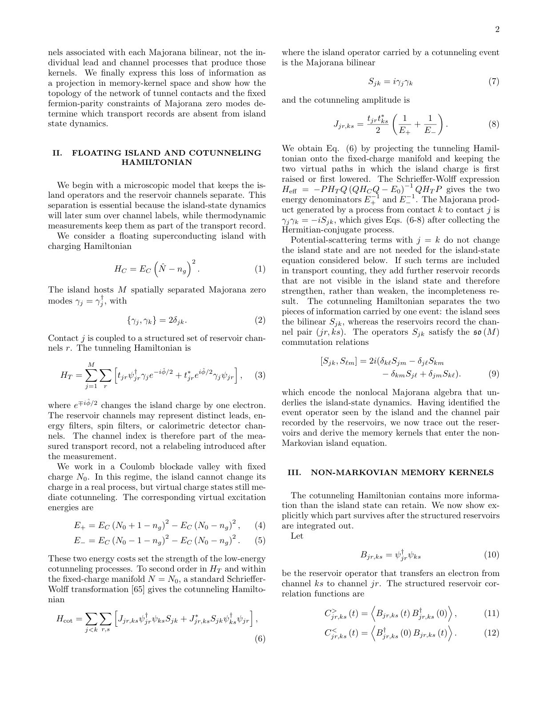
<figcaption class="paper-figure-caption"><b>Fig 1.</b> Low-resolution page preview, page 2</figcaption>
</figure>
<figure class="paper-figure-card">
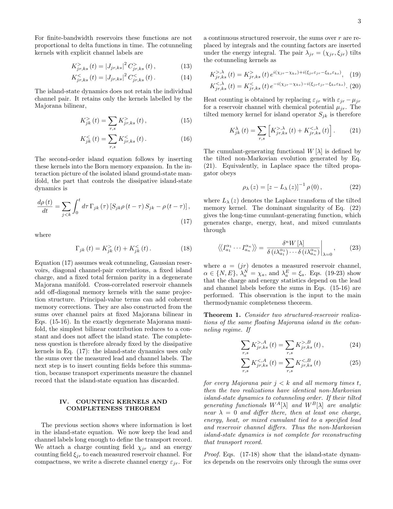
<figcaption class="paper-figure-caption"><b>Fig 2.</b> Low-resolution page preview, page 3</figcaption>
</figure>
<figure class="paper-figure-card">
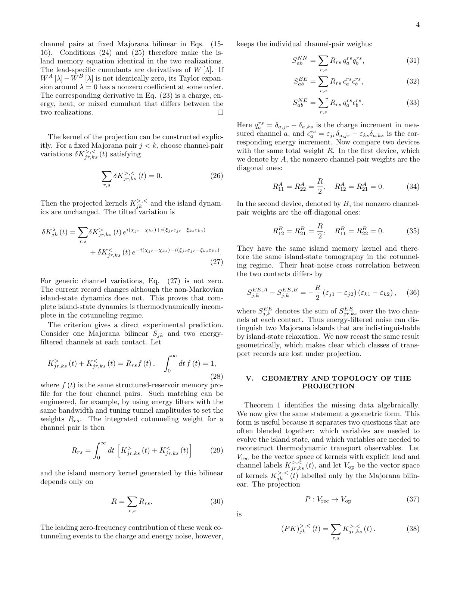
<figcaption class="paper-figure-caption"><b>Fig 3.</b> Low-resolution page preview, page 4</figcaption>
</figure>
<figure class="paper-figure-card">
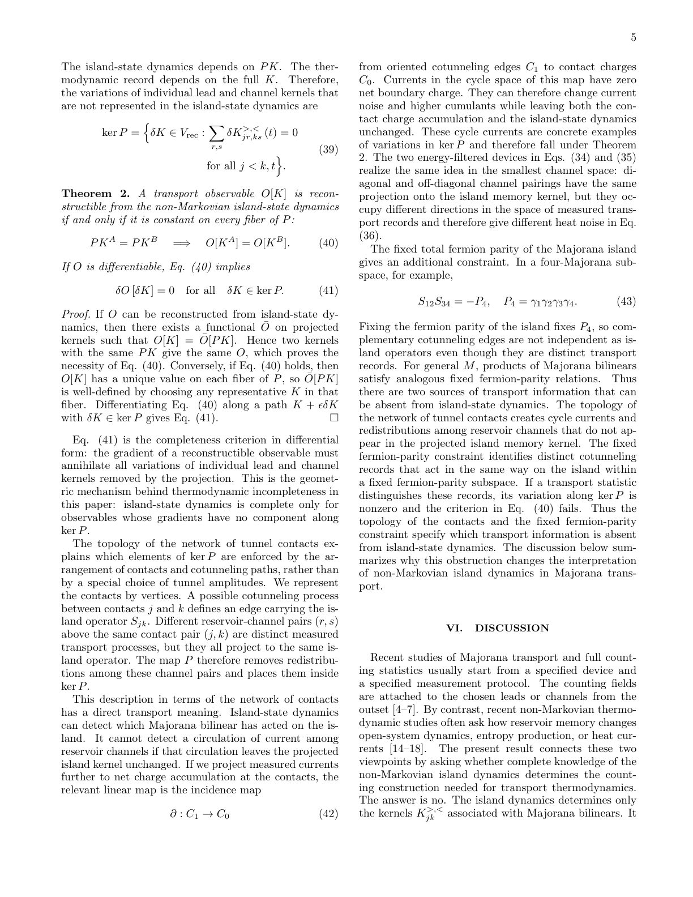
<figcaption class="paper-figure-caption"><b>Fig 4.</b> Low-resolution page preview, page 5</figcaption>
</figure>
<figure class="paper-figure-card">
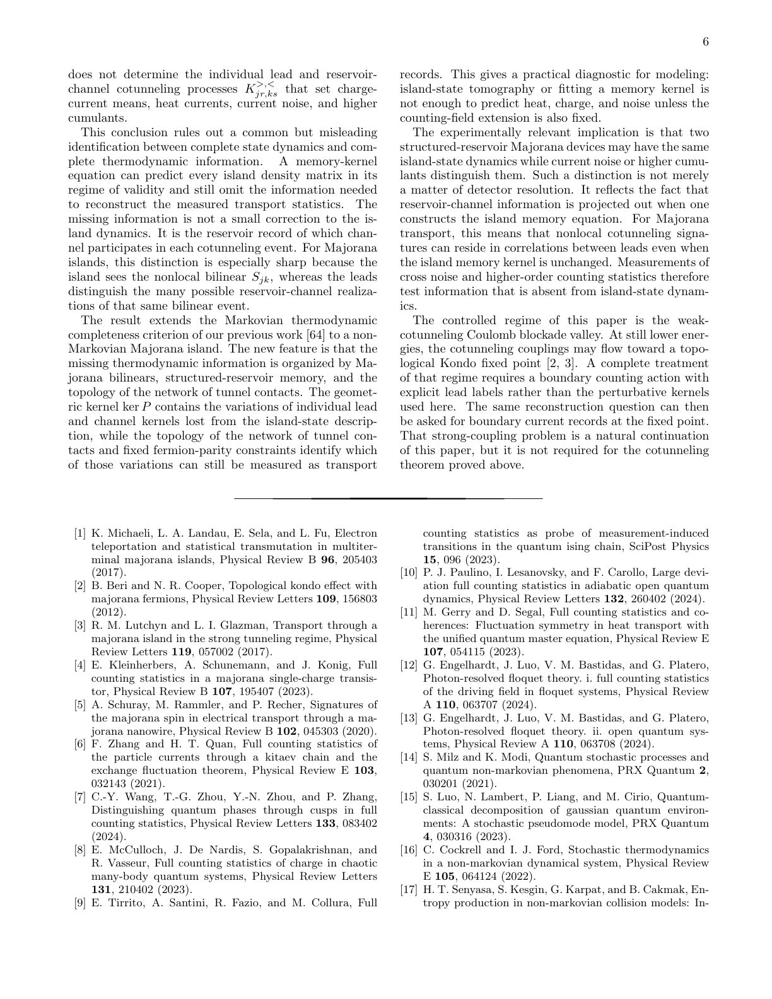
<figcaption class="paper-figure-caption"><b>Fig 5.</b> Low-resolution page preview, page 6</figcaption>
</figure>
</div>

<p><strong>Summary.</strong> This paper demonstrates that the non-Markovian dynamics of a Majorana island do not contain enough information to fully determine the transport statistics of its connected leads. It establishes a thermodynamic completeness criterion and shows that different reservoir configurations can produce identical island-state evolution while yielding different heat and charge noise. This highlights a fundamental loss of information when tracing out environmental degrees of freedom.</p>
<p><strong>Why it may be interesting.</strong> It provides a fundamental limit on the reconstructibility of open quantum system dynamics, specifically showing that observing the system's internal state is insufficient to infer the full thermodynamic record of its environment.</p>
<details>
<summary>Detailed structure</summary>
<p><strong>Main problem.</strong> Investigating whether the non-Markovian dynamics of a Majorana island are sufficient to reconstruct the full thermodynamic transport statistics (charge, heat, and noise) measured in the connected leads.</p>
<p><strong>Main result.</strong> The author proves that island-state dynamics are thermodynamically incomplete because the memory kernel discards the specific identity of reservoir channels, meaning two devices with identical island relaxation can exhibit different transport noise.</p>
<p><strong>Method.</strong> The study uses a Schrieffer-Wolff transformation to derive a cotunneling Hamiltonian, a Born memory expansion for the non-Markovian master equation, and the counting field method to track transport statistics.</p>
<p><strong>Model / system.</strong> A floating superconducting Majorana island in the Coulomb blockade regime, featuring M Majorana zero modes coupled to structured reservoirs via tunneling contacts.</p>
<p><strong>Key observables.</strong> Charge transfer, heat transfer, charge noise, heat noise, and mixed charge-energy correlations.</p>
<p><strong>Important parameters / regimes.</strong> Coulomb charging energy (Ec), gate voltage (ng), cotunneling regime, and Majorana bilinear operators.</p>
<p><strong>Assumptions / limitations.</strong> The analysis is restricted to the weak-cotunneling regime and assumes Gaussian reservoirs and analytic counting-field generating functionals.</p>
<p><strong>Paper structure.</strong> The paper introduces the problem of thermodynamic incompleteness, defines the Majorana island model in the cotunneling regime, presents a completeness theorem and a geometric/topological criterion for reconstructibility, and concludes with experimental predictions and limitations.</p>
</details>
<details>
<summary>Abstract</summary>
<p>We show that the complete knowledge of the non-Markovian island-state dynamics of a floating Majorana island does not, in general, determine the thermodynamic transport statistics measured in the leads. We demonstrate this statement in a Coulomb-blockaded island with $M$ Majorana zero modes coupled to structured reservoirs. In the cotunneling regime, a Schrieffer-Wolff transformation gives reservoir-assisted transitions generated by Majorana bilinears. After the reservoirs are traced out, the island state determines the memory kernel associated with each bilinear, and this is enough to predict all island-state observables within the cotunneling approximation. It is not enough to determine which lead or detector channel supplied the electron, absorbed the electron, or carried the corresponding energy exchange. This is a genuine loss of thermodynamic information, not an error in the island equation. We formulate the result as a thermodynamic completeness criterion: an island memory equation determines a transport observable only when that observable is constant over all assignments of reservoir channels that give the same island memory kernel. The criterion gives a measurable prediction. Two structured-reservoir Majorana devices can have identical island-state tomography and relaxation, but different charge noise measured separately in the leads, heat noise, and mixed charge-energy correlations. The geometry of the projection from reservoir records to island kernels and the topology of the network of tunnel contacts identify which transport information is absent from island-state dynamics.</p>
</details>
<p><sub><a href="#top">↑ back to top</a></sub></p>

<p><a id="paper-2605.06263"></a></p>
<h3 id="beating-noise-in-frequency-estimation-with-squeezing-and-memory-in-continuous-variable-systems"><a href="http://arxiv.org/abs/2605.06263v1">Beating noise in frequency estimation with squeezing and memory in continuous-variable systems</a></h3>
<p><strong>Authors:</strong> Ayan Patra, Manju, Aditi Sen De, Matteo G. A. Paris<br>
<strong>Type:</strong> theory · <strong>Category:</strong> quantum information and computing · <strong>PDF:</strong> <a href="https://arxiv.org/pdf/2605.06263v1">https://arxiv.org/pdf/2605.06263v1</a><br>
<strong>Analysis basis:</strong> full PDF text, analyzed in chunks
<strong>Topic relevance:</strong> <code>quantum measurements</code> <strong>3/5</strong> · <code>entanglement &amp; information structure</code> <strong>2/5</strong> · <code>methods for driven-dissipative</code> <strong>2/5</strong> · <code>non-equilibrium dynamics</code> <strong>2/5</strong></p>
<div class="figure-strip-hint">↔ Scroll figures horizontally</div>
<div class="paper-figures-scroll">
<figure class="paper-figure-card">
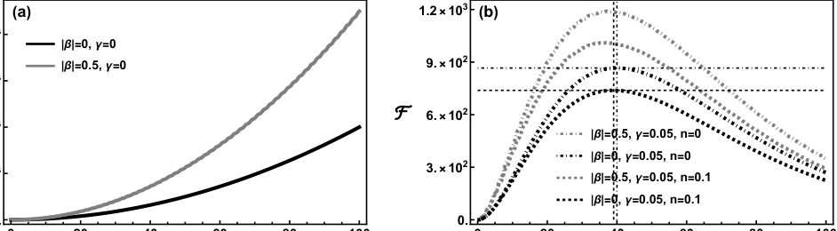
<figcaption class="paper-figure-caption"><b>Fig 1.</b> FIG. 1: QFI as a function of time. In the left panel (a), γ = 0; the black (continuous) and gray (continuous) curves correspond to |β| = 0 and |β| = 0.5, respectively. In the right panel (b), γ = 0.05. Other parameters are fixed at ω = 2.1, β = −0.5i, and α = i.</figcaption>
</figure>
<figure class="paper-figure-card">
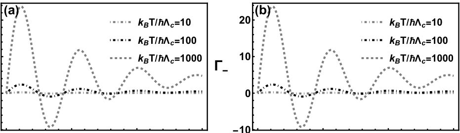
<figcaption class="paper-figure-caption"><b>Fig 2.</b> FIG. 2: (a) Γ+(t) = ∆(t) + γ(t) (ordinate) and (b) Γ+(t) = ∆(t) −γ(t) (ordinate) as a function of time (abscissa). The other parameter values are ω = 7, ξ = 0.3, and Λc = 1.</figcaption>
</figure>
<figure class="paper-figure-card">
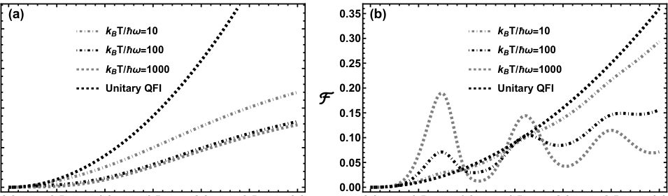
<figcaption class="paper-figure-caption"><b>Fig 3.</b> FIG. 3: QFI (ordinate) against time (abscissa) under unitary, non-Markovian and Markovian dynamics without squeezing (β = 0). The left panel (a) corresponds to Λc = 2 and ω = 1 (Markovian evolution). For right panel (b), Λc = 1 and ω = 7 with ξ = 0.3 and α = 0.1 (Non-Markovian dynamics).</figcaption>
</figure>
<figure class="paper-figure-card">
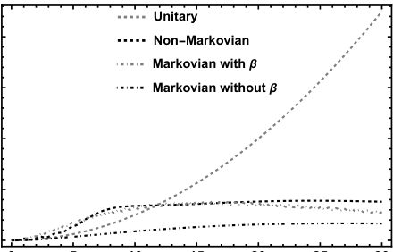
<figcaption class="paper-figure-caption"><b>Fig 4.</b> FIG. 4: Competition between Hamiltonian engineering and non-Markovianity in parameter estimation. QFI (ordinate) with respect to time (abscissa) when squeezing is introduced, i.e., β ̸= 0. The parameters are ξ = 0.3, Λc = 1, ω = 5, β = 0.2, α = 0.025, kBT/¯hΛc = 4, γ = 0.07 and n = 0.4. There exists a time region in which F with β ̸= 0 under Markovian dynamics can be higher than that of non-Markovian evoluion without β. It shows that the Hamiltonian engineering can sometime be more beneficial than the non-Markovian dynamics.</figcaption>
</figure>
<figure class="paper-figure-card">
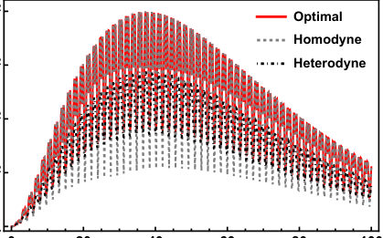
<figcaption class="paper-figure-caption"><b>Fig 5.</b> FIG. 5: Classical Fisher information (CFI) as a function of time. The CFI corresponding to homodyne and heterodyne measurements are shown in gray (dashed) and black (dot-dashed), respectively, while the dyne-optimal CFI is depicted by the red (continuous) curve. The dyne-optimal CFI coincides with the maximum of the homodyne and heterodyne curves. The parameters are ω = 2.1, γ = 0.05, n = 0.1, and β = 0.3 −0.5i, with α = i.</figcaption>
</figure>
</div>

<p><strong>Summary.</strong> This paper investigates how squeezing and environmental memory can be used to improve frequency estimation precision in noisy continuous-variable systems. It demonstrates that squeezing can change the fundamental scaling of precision with time and that non-Markovianity can temporarily recover lost information. The work also identifies the limits of Gaussian measurements in high-squeezing regimes.</p>
<p><strong>Why it may be interesting.</strong> It provides a dual-strategy approach (Hamiltonian engineering and environmental control) to combat decoherence, which is highly relevant for developing robust quantum sensors and understanding the metrological utility of non-Markovianity in open quantum systems.</p>
<details>
<summary>Detailed structure</summary>
<p><strong>Main problem.</strong> How to mitigate the detrimental effects of environmental noise and decoherence on the precision of frequency estimation in continuous-variable quantum systems.</p>
<p><strong>Main result.</strong> The study finds that Hamiltonian engineering via squeezing can enhance QFI scaling to $t^3$ in the short-time regime, while non-Markovian memory effects can induce information backflow to temporarily restore estimation precision; however, strong squeezing may eventually require non-Gaussian measurements to saturate the QFI.</p>
<p><strong>Method.</strong> The authors use the Gaussian quantum state formalism, calculating Quantum Fisher Information (QFI) and Classical Fisher Information (CFI) using the first and second moments of the system's state under various master equations.</p>
<p><strong>Model / system.</strong> A single-mode harmonic oscillator (continuous-variable system) initially in a coherent state, subject to a Hamiltonian that can include squeezing, and interacting with either a Markovian thermal bath or a non-Markovian Quantum Brownian Motion environment.</p>
<p><strong>Key observables.</strong> Quantum Fisher Information (QFI), Classical Fisher Information (CFI), and the Symmetric Logarithmic Derivative (SLD).</p>
<p><strong>Important parameters / regimes.</strong> Frequency ($\omega$), squeezing parameter ($eta$), damping rate ($\gamma$), thermal photon number ($n$), and the non-Markovianity ratio ($r = \Lambda_c/\omega$).</p>
<p><strong>Assumptions / limitations.</strong> The analysis primarily focuses on the Gaussian regime and Gaussian measurement strategies (homodyne, heterodyne, and optimized dyne).</p>
<p><strong>Figures summary.</strong> Figure 2 shows time-dependent dissipation and diffusion coefficients; Figure 3 compares QFI under unitary, non-Markovian, and Markovian dynamics; Figure 5 shows CFI for different dyne measurements; Figure 6 illustrates the growing gap between QFI and CFI with increasing squeezing; Figure 7 shows the failure of fixed quadrature measurements in non-Markovian regimes.</p>
<p><strong>Paper structure.</strong> The paper introduces the problem of frequency estimation in noisy CV systems, develops the mathematical framework for Gaussian states under Markovian and non-Markovian dynamics, analyzes the impact of squeezing on QFI scaling, evaluates the role of environmental memory, and concludes by assessing the optimality of various Gaussian measurement strategies.</p>
</details>
<details>
<summary>Abstract</summary>
<p>Quantum metrology promises precision beyond classical limits, yet environmental noise typically degrades the quantum resources required for such enhancement. In this work, we investigate frequency estimation in noisy continuous-variable systems, focusing on two complementary strategies to mitigate decoherence: Hamiltonian engineering and the exploitation of non-Markovian dynamics. By embedding squeezing directly into the system Hamiltonian, we show that the quantum Fisher information (QFI) may acquire a tunable higher-order time dependence, leading to enhanced sensitivity in the short-time regime. Moving beyond the Markovian approximation, we employ the quantum Brownian motion model to demonstrate that structured environments with finite memory can induce information backflow, temporarily restoring and even improving estimation precision relative to the unitary limit. We further assess the achievability of these bounds via Gaussian measurements, identifying regimes where homodyne, heterodyne, and optimized general-dyne measurements saturate the QFI, and noting that stronger squeezing widens the gap, potentially requiring non-Gaussian measurement strategies. Our results establish that jointly tailoring system Hamiltonian and environmental memory offers a viable route toward robust quantum-enhanced frequency estimation in open systems.</p>
</details>
<p><sub><a href="#top">↑ back to top</a></sub></p>

<p><a id="paper-2605.06425"></a></p>
<h3 id="comparative-study-of-potts-machine-dynamics-and-performance-for-max-k-cut"><a href="http://arxiv.org/abs/2605.06425v1">Comparative Study of Potts Machine Dynamics and Performance for Max-k-Cut</a></h3>
<p><strong>Authors:</strong> Bjarke Almer Frederiksen, Robbe De Prins, Peter Bienstman<br>
<strong>Type:</strong> theory · <strong>Category:</strong> disordered systems and neural networks · <strong>PDF:</strong> <a href="https://arxiv.org/pdf/2605.06425v1">https://arxiv.org/pdf/2605.06425v1</a><br>
<strong>Analysis basis:</strong> full PDF text, analyzed in chunks
<strong>Topic relevance:</strong> <code>non-equilibrium dynamics</code> <strong>3/5</strong> · <code>driven-dissipative phase transition</code> <strong>2/5</strong> · <code>methods for driven-dissipative</code> <strong>2/5</strong> · <code>exotic spin models in light-matter</code> <strong>1/5</strong> · <code>non-equilibrium universality</code> <strong>1/5</strong></p>
<div class="figure-strip-hint">↔ Scroll figures horizontally</div>
<div class="paper-figures-scroll">
<figure class="paper-figure-card">
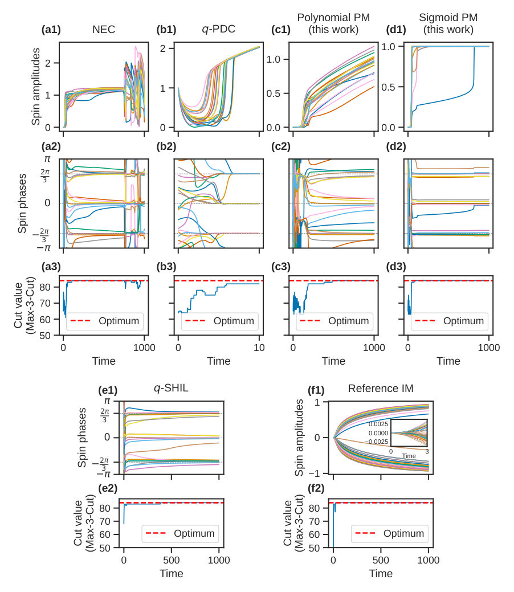
<figcaption class="paper-figure-caption"><b>Fig 1.</b> Figure 1: Time traces for each studied model on a 20-vertex Max-3-Cut problem from the ER50 set. We visualize the evolution of the amplitudes (a1 - d1, f1), phases (a2 - d2, e1), and the cut value (a3 - d3, e2 - f2) of the system. For the amplitude and phase plots, curves of different spins are shown in different colors, while the gray dashed lines indicate the discrete Potts phase values θ = 2πk/q. For cut value plots, the red dashed line indicates the optimum cut value of the problem. For the Reference IM model, an inset shows its time trace from t = 0 to t = 3 to better visualize the initial dynamics. Default parameters listed in the Supp. §S6 are used for each model.</figcaption>
</figure>
<figure class="paper-figure-card">
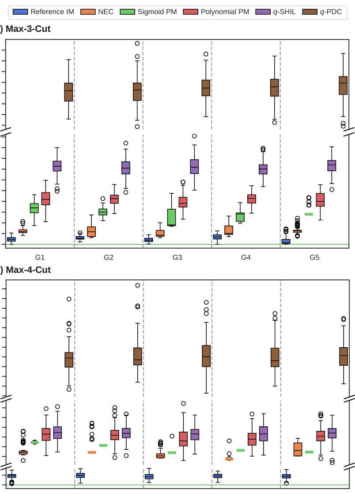
<figcaption class="paper-figure-caption"><b>Fig 2.</b> Figure 2: Relative optimality gap distributions for each model on (a) Max-3-Cut problems and (b) Max-4-Cut problems across GSet benchmark graphs G1-G5. Each model was evaluated using hyperparameters optimized for minimum mean optimality gap. Box plots show the distribution of relative optimality gaps (%) across 100 independent runs per problem-model combination. Lower values indicate better performance, with 0% representing the optimal solution (green horizontal line). The reference Ising machine consistently achieves the smallest optimality gaps, followed by the NEC Potts machine model. See Supp. §S7 for detailed results, including hyperparameter tuning heatmaps for each model and graph,...</figcaption>
</figure>
<figure class="paper-figure-card">
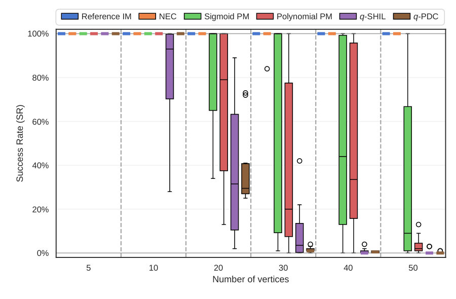
<figcaption class="paper-figure-caption"><b>Fig 3.</b> Figure 3: Success rate distributions for each model on ER50 Max-3-Cut benchmark problems (5–50 vertices, 10 instances per size). Each model was evaluated using hyperparameters optimized for maximum success rate, with 100 independent runs per graph-model combination. Box plots show the distribution of success rates across graphs of each size. The reference IM and NEC model achieve consistently high success rates across all graph sizes, while the q-PDC and q-SHIL models show lower performance, particularly for larger graphs. See Supp. §S6 for hyperparameter sweep ranges.</figcaption>
</figure>
</div>

<p><strong>Summary.</strong> This paper provides a systematic benchmark of various Potts Machine models against Ising Machines for solving multi-state optimization problems. It reveals that current Potts Machine dynamics actually underperform compared to binary Ising approaches and identifies the specific dynamical features needed to improve them.</p>
<p><strong>Why it may be interesting.</strong> This is interesting for researchers in many-body dynamics and non-equilibrium systems because it links the macroscopic optimization performance of complex dynamical systems to microscopic dynamical properties like bifurcation structures and phase discretization.</p>
<details>
<summary>Detailed structure</summary>
<p><strong>Main problem.</strong> The study evaluates whether Potts Machines (PMs) outperform Ising Machines (IMs) on multi-state combinatorial optimization problems like Max-k-Cut, specifically investigating if native multi-state representation overcomes the overhead of binary encoding.</p>
<p><strong>Main result.</strong> Surprisingly, the reference Ising Machine outperforms all tested Potts Machines, and this performance gap increases when moving from Max-3-Cut to Max-4-Cut. The authors identify that performance correlates with specific dynamical properties like connected origin-to-solution branches and amplitude homogeneity.</p>
<p><strong>Method.</strong> The authors use a unified dynamical systems framework of coupled ordinary differential equations (ODEs) and numerical integration (Euler-Maruyama) to simulate adiabatic annealing on GSet and random (ER50) graphs.</p>
<p><strong>Model / system.</strong> The study compares several models: Non-Equilibrium Condensate (NEC), q-photon downconversion (q-PDC), q-th sub-harmonic injection locking (q-SHIL), a Polynomial PM, and a Sigmoid PM, against a reference Coherent Ising Machine (CIM) model.</p>
<p><strong>Key observables.</strong> Relative optimality gap, success rate, spin amplitudes, spin phases, and cut values.</p>
<p><strong>Important parameters / regimes.</strong> Phase discretization strength (gamma), inter-spin coupling strength (beta), linear amplitude gain (alpha), nonlinearity order (n), and annealing rates.</p>
<p><strong>Assumptions / limitations.</strong> The study excludes certain discrete-spin PMs and phase-only models with non-Kuramoto-type coupling; it also notes a Hamiltonian mismatch between the planar Potts model and the target Max-k-Cut problem for k &gt; 3.</p>
<p><strong>Figures summary.</strong> Figures include time traces of spin evolution, box plots of optimality gaps and success rates across different graph sizes, heatmaps showing hyperparameter sensitivity, and convergence plots for simulation time and integration time steps.</p>
<p><strong>Paper structure.</strong> The paper introduces the optimization problem, defines the mathematical framework for various PM and IM models, presents a comparative benchmarking on graph datasets, analyzes the correlation between dynamics and performance, and concludes with a sensitivity analysis of hyperparameters.</p>
</details>
<details>
<summary>Abstract</summary>
<p>Combinatorial optimization problems in logistics, finance, energy, and scheduling routinely involve multi-state decision variables. Ising machines (IMs) require binary expansions (e.g., one-hot encoding) to encode such variables, whereas Potts machines (PMs) represent them natively. By doing so, PMs are expected to outperform IMs on multi-state problems. To the best of our knowledge, no systematic study of PM models has yet assessed whether this expectation holds. We therefore benchmark five representative PMs against a reference IM on Max-3-Cut and Max-4-Cut, using 800-vertex GSet graphs and random graphs of up to 50 vertices. Surprisingly, the reference IM still outperforms every PM, and the IM supremacy increases significantly in going from Max-3-Cut to Max-4-Cut. These results provide clear evidence that current PM dynamics underperform relative to binary approaches, even in regimes where they are presumed advantageous. We provide a way forward by quantifying the underperformance of current PMs, as well as by identifying three dynamical properties that correlate strongly with their performance ranking. Our work stresses the need for more systematic assessments of algorithmic performance in order to guide the design of more effective Potts machines.</p>
</details>
<p><sub><a href="#top">↑ back to top</a></sub></p>

<p><a id="paper-2605.05448"></a></p>
<h3 id="breakdown-of-emergent-chiral-order-and-defect-chaos-in-nonreciprocal-flocks"><a href="http://arxiv.org/abs/2605.05448v1">Breakdown of Emergent Chiral Order and Defect Chaos in Nonreciprocal Flocks</a></h3>
<p><strong>Authors:</strong> Charlotte Myin, Suropriya Saha, Benoît Mahault<br>
<strong>Type:</strong> both · <strong>Category:</strong> statistical mechanics · <strong>PDF:</strong> <a href="https://arxiv.org/pdf/2605.05448v1">https://arxiv.org/pdf/2605.05448v1</a><br>
<strong>Analysis basis:</strong> full PDF text, analyzed in chunks
<strong>Topic relevance:</strong> <code>non-equilibrium dynamics</code> <strong>3/5</strong> · <code>non-equilibrium universality</code> <strong>3/5</strong> · <code>driven-dissipative phase transition</code> <strong>2/5</strong></p>
<div class="figure-strip-hint">↔ Scroll figures horizontally</div>
<div class="paper-figures-scroll">
<figure class="paper-figure-card">
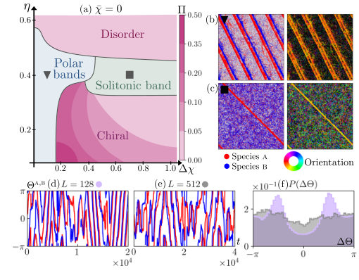
<figcaption class="paper-figure-caption"><b>Fig 1.</b> FIG. 1. Phase behaviour of nonreciprocal flocks in the strong nonreciprocity regime. (a) Schematic phase diagram in the (∆χ, η) plane with L = 512. The ‘chiral’ region is coloured according to the global polarity averaged over species Π = 1</figcaption>
</figure>
<figure class="paper-figure-card">
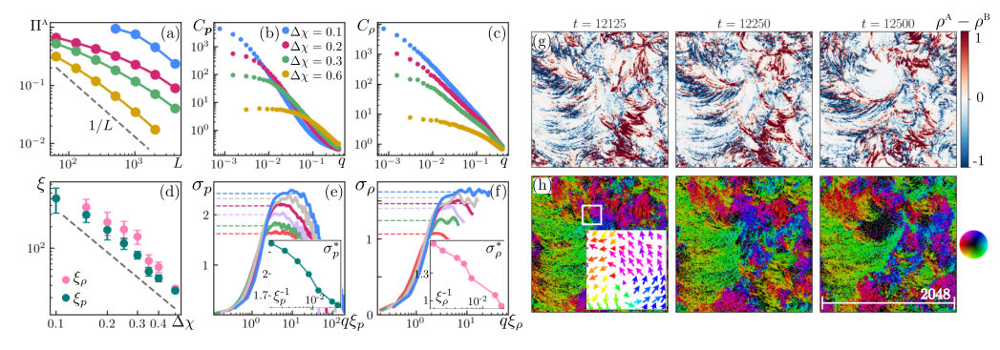
<figcaption class="paper-figure-caption"><b>Fig 2.</b> FIG. 2. Characterization of the nonreciprocity-induced defect-chaos phase (η = 0.2). (a) Time-averaged polar order parameter associated with species a as a function of system size for various values of ∆χ. (b,c) Polarity (b) and density fluctuations (c) equal-time correlation function for species a radially averaged over the (qx, qy) plane as a function of the wavenumber q = p</figcaption>
</figure>
<figure class="paper-figure-card">
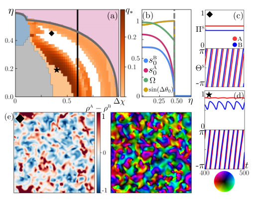
<figcaption class="paper-figure-caption"><b>Fig 3.</b> FIG. 3. Phenomenology of the continuum model. (a) Phase diagram showing regions where Eqs. (2) admit disordered and homogeneous polar solutions in purple and blue, respectively. Within the orange domain, homogeneous solutions are asso- ciated with global chiral order. The color bar indicates the magnitude of the most unstable wavenumber obtained from Floquet stability analysis, while white indicates that the so- lution is linearly stable. In the grey region, Eqs. (2) exhibit unphysical solutions [64]. (b) Homogeneous uniform chiral solution as a function of the noise η for ∆χ = 0.6 (black line in (a)). (c,d) Time series of the uniform (c) and modulated (d) chiral solutions. Parameters are...</figcaption>
</figure>
</div>

<p><strong>Summary.</strong> This paper demonstrates that chiral order in nonreciprocal active matter is unstable and breaks down into a state of spatiotemporal chaos driven by topological defects. It reveals that the coupling between density and orientation leads to non-universal scaling exponents that deviate from standard KPZ predictions. This provides new insights into how nonreciprocity modifies the large-scale physics of active systems.</p>
<p><strong>Why it may be interesting.</strong> The study explores how broken action-reaction symmetry and nonreciprocal interactions drive non-equilibrium phase transitions and unconventional scaling, which is highly relevant to understanding driven-dissipative many-body dynamics.</p>
<details>
<summary>Detailed structure</summary>
<p><strong>Main problem.</strong> The study investigates the stability of emergent chiral order in two-dimensional nonreciprocal flocking mixtures and the origin of non-universal scaling behavior in the resulting defect-chaos phase.</p>
<p><strong>Main result.</strong> Chiral order is found to be generically unstable due to the proliferation of topological defects, leading to a defect-chaos phase with non-universal scaling exponents driven by density-polarity coupling.</p>
<p><strong>Method.</strong> The authors combine large-scale agent-based simulations with a coarse-grained hydrodynamic continuum description and Floquet stability analysis.</p>
<p><strong>Model / system.</strong> A binary mixture of two species of Vicsek-like active particles in a 2D plane, characterized by asymmetric (nonreciprocal) alignment interactions and angular noise.</p>
<p><strong>Key observables.</strong> Global polarity, phase shift between species, density and orientational correlation functions, and correlation length.</p>
<p><strong>Important parameters / regimes.</strong> Nonreciprocity strength (delta-chi), noise strength (eta), and system size (L).</p>
<p><strong>Assumptions / limitations.</strong> The continuum hydrodynamic description is derived near the ordering threshold and may not be valid far from it; stability is assessed via the eigenvalues of the evolution operator.</p>
<p><strong>Figures summary.</strong> Phase diagrams in the (delta-chi, eta) plane, snapshots of band phases, time series of global polarities, and plots of correlation functions and scaling exponents.</p>
<p><strong>Paper structure.</strong> The paper introduces the nonreciprocal flocking model, presents a phase diagram, develops a continuum theory, performs stability analysis of chiral states, and uses large-scale simulations to characterize the defect-chaos phase and its scaling properties.</p>
</details>
<details>
<summary>Abstract</summary>
<p>We show that chiral order in two-dimensional nonreciprocal flocking mixtures is generically unstable. Combining large-scale agent-based simulations with a coarse-grained continuum description, we demonstrate that rotating chiral states emerging from antisymmetric couplings are destroyed by the proliferation of topological defects. The resulting dynamics is spatiotemporally chaotic and characterized by a finite correlation length that diverges as nonreciprocity vanishes. On length scales below this cutoff, density and orientational order fluctuations remain scale-free, but the associated scaling exhibits nonuniversal exponents. We attribute this atypical behavior to the coupling between density and order, which causes topological defects to act as persistent sources of nonlinear fluctuations.</p>
</details>
<p><sub><a href="#top">↑ back to top</a></sub></p>

<p><a id="paper-2605.05477"></a></p>
<h3 id="operationally-admissible-post-quantum-correlations-from-a-standard-quantum-walk"><a href="http://arxiv.org/abs/2605.05477v1">Operationally Admissible Post-Quantum Correlations from a Standard Quantum Walk</a></h3>
<p><strong>Authors:</strong> Marcos C. de Oliveira<br>
<strong>Type:</strong> theory · <strong>Category:</strong> quantum information and computing · <strong>PDF:</strong> <a href="https://arxiv.org/pdf/2605.05477v1">https://arxiv.org/pdf/2605.05477v1</a><br>
<strong>Analysis basis:</strong> full PDF text, analyzed in chunks
<strong>Topic relevance:</strong> <code>entanglement &amp; information structure</code> <strong>3/5</strong> · <code>quantum measurements</code> <strong>3/5</strong> · <code>non-equilibrium dynamics</code> <strong>2/5</strong></p>
<div class="figure-strip-hint">↔ Scroll figures horizontally</div>
<div class="paper-figures-scroll">
<figure class="paper-figure-card">
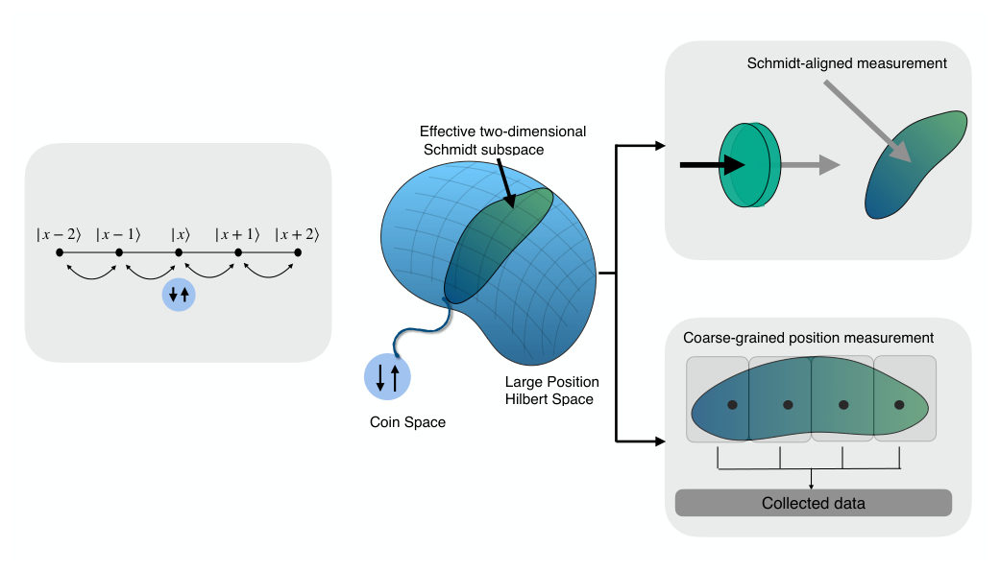
<figcaption class="paper-figure-caption"><b>Fig 1.</b> FIG. 1. Schematic illustration of the separation between the existence and operational accessibility of post-quantum correlations in a standard coined quantum walk. Left: a fully standard, unitary nearest-neighbor quantum walk on a one-dimensional lattice, with a two-level coin controlling the conditional shift. Center: entanglement between the coin (two-dimensional Hilbert space) and the walker position generates an effective low-dimensional Schmidt subspace within the large position Hilbert space. Right: two measurement regimes. Schmidt-aligned observables access this subspace and reveal admissible post-quantum CHSH violations, while coarse-grained position measurements fail to resolve...</figcaption>
</figure>
<figure class="paper-figure-card">
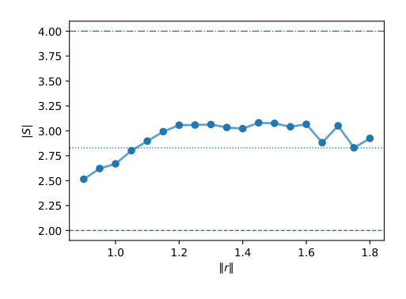
<figcaption class="paper-figure-caption"><b>Fig 2.</b> FIG. 2. CHSH value |S| versus extended Bloch magnitude ∥r∥for the fixed Schmidt-aligned benchmark at T = 60. Markers show the discrete maximizers obtained from the directional scan at each sampled ∥r∥, and the solid curve is a guide to the eye connecting these points. Horizontal reference lines indicate the classical CHSH bound |S| = 2 (dashed), Tsirelson’s bound |S| = 2 √</figcaption>
</figure>
<figure class="paper-figure-card">
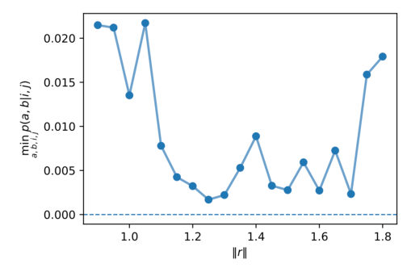
<figcaption class="paper-figure-caption"><b>Fig 3.</b> FIG. 3. Minimum joint probability mina,b,i,j p(a, b|i, j) for the Schmidt-aligned benchmark, demonstrating admissibility of the post-quantum violations. The dashed horizontal line indicates the boundary min p = 0.</figcaption>
</figure>
<figure class="paper-figure-card">
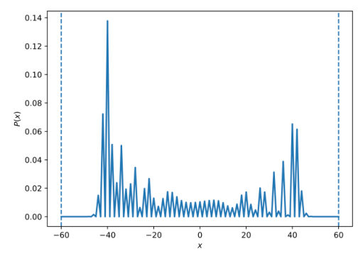
<figcaption class="paper-figure-caption"><b>Fig 4.</b> FIG. 4. Final-time walker position distribution P(x) at T = 60 for the maximal-violation Schmidt-aligned witness at ∥r∥= 1.45, with |S| = 3.0810. The distribution remains confined to |x| ≤T and exhibits the familiar interference-broadened profile of a standard Hadamard coined quantum walk.</figcaption>
</figure>
<figure class="paper-figure-card">
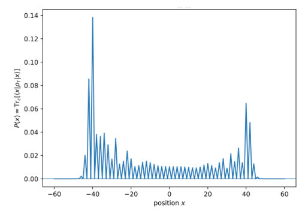
<figcaption class="paper-figure-caption"><b>Fig 5.</b> FIG. 5. Final-time walker position distribution P(x) at T = 60 for the coarse-grained witness of Table I. The distribution remains confined to |x| ≤T and shows the familiar interference-broadened profile of a standard Hadamard coined quantum walk.</figcaption>
</figure>
</div>

<p><strong>Summary.</strong> This paper demonstrates that a standard quantum walk can generate correlations that exceed the Tsirelson bound if the initial coin state is prepared using an extended, non-positive framework. However, it reveals that these post-quantum features are practically hidden from observers using realistic, coarse-grained position measurements as the system evolves. The work highlights a fundamental gap between the existence of post-quantum resources and their operational accessibility.</p>
<p><strong>Why it may be interesting.</strong> It provides a controlled theoretical platform to study the boundary between quantum and post-quantum regimes and highlights how measurement resolution and structure can fundamentally limit the observation of non-classical resources in many-body-like dynamics.</p>
<details>
<summary>Detailed structure</summary>
<p><strong>Main problem.</strong> Investigating whether post-quantum correlations (violating the Tsirelson bound) can be operationally accessed within a standard quantum walk framework and distinguishing between their existence in a state versus their accessibility under realistic measurement constraints.</p>
<p><strong>Main result.</strong> The study finds that while standard quantum walk dynamics can support post-quantum correlations via an extended coin preparation, these correlations are strongly suppressed and become inaccessible under physically natural, coarse-grained position measurements as the walk time increases.</p>
<p><strong>Method.</strong> The authors use a numerical approach involving randomized searches over preparation and measurement directions, comparing optimized Schmidt-aligned measurements against coarse-grained position binning, and employing a quasiprobability reconstruction to emulate non-positive coin preparations.</p>
<p><strong>Model / system.</strong> A one-dimensional, discrete-time, coined quantum walk on a lattice (Z) consisting of a two-level coin and a high-dimensional walker subspace, utilizing standard Hadamard coin and nearest-neighbor shift dynamics.</p>
<p><strong>Key observables.</strong> CHSH Bell parameter (S), joint probabilities p(a, b|i, j), and Schmidt coefficients.</p>
<p><strong>Important parameters / regimes.</strong> Bloch vector magnitude of the coin preparation (||r||), walk time (T), and position binning threshold ratio (x0/T).</p>
<p><strong>Assumptions / limitations.</strong> The framework assumes that physical consistency can be maintained via admissibility (non-negative probabilities) and no-signaling at the level of observed statistics, even if the underlying state preparation is non-positive.</p>
<p><strong>Figures summary.</strong> Figure 1 summarizes the separation between existence and accessibility; Figure 2 shows CHSH values exceeding Tsirelson's bound for Schmidt-aligned measurements; Figure 3 shows the admissibility margin; Figure 6 and 7 demonstrate the suppression of Bell violations in coarse-grained measurements as walk time increases.</p>
<p><strong>Paper structure.</strong> The paper introduces the problem of post-quantum correlations, defines the extended preparation framework and quantum walk model, presents a benchmark using optimized measurements to show existence, then explores the accessibility gap using coarse-grained measurements, and concludes by discussing the scaling effects and experimental implications.</p>
</details>
<details>
<summary>Abstract</summary>
<p>It is shown that a standard one-dimensional coined discrete-time quantum walk can generate operationally admissible post-quantum correlations in a coin-position Bell scenario, without any modification of its unitary nearest-neighbor dynamics. Post-quantum features enter exclusively through an extended operational preparation of the coin, described by a complementarity-violating Hermitian trace-one operator, while physical consistency is enforced solely at the level of observable statistics via admissibility and no-signaling. The extended preparation admits an experimental emulation through a two-component quasiprobability reconstruction over physical coin states, at the price of an increased sampling overhead. The walk-generated coin-position entanglement can support CHSH values exceeding Tsirelson's bound, even though the walk dynamics remains fully standard. We also show that physically natural coarse-grained position measurements can render such post-quantum correlations operationally inaccessible, strongly suppressing observable Bell violations. The purpose here is to contrast the separation between the existence of post-quantum behavior and its accessibility under realistic measurement constraints.</p>
</details>
<p><sub><a href="#top">↑ back to top</a></sub></p>

<p><a id="paper-2605.05325"></a></p>
<h3 id="learning-gaussian-optical-states-with-quantum-computers"><a href="http://arxiv.org/abs/2605.05325v1">Learning Gaussian optical states with quantum computers</a></h3>
<p><strong>Authors:</strong> Spencer Dimitroff, John Kallaugher, Ashe Miller, Mohan Sarovar<br>
<strong>Type:</strong> theory · <strong>Category:</strong> quantum information and computing · <strong>PDF:</strong> <a href="https://arxiv.org/pdf/2605.05325v1">https://arxiv.org/pdf/2605.05325v1</a><br>
<strong>Analysis basis:</strong> full PDF text, analyzed in chunks
<strong>Topic relevance:</strong> <code>quantum measurements</code> <strong>3/5</strong> · <code>Tavis-Cummings &amp; cavity-many-emitter</code> <strong>2/5</strong> · <code>entanglement &amp; information structure</code> <strong>2/5</strong></p>
<div class="figure-strip-hint">↔ Scroll figures horizontally</div>
<div class="paper-figures-scroll">
<figure class="paper-figure-card">
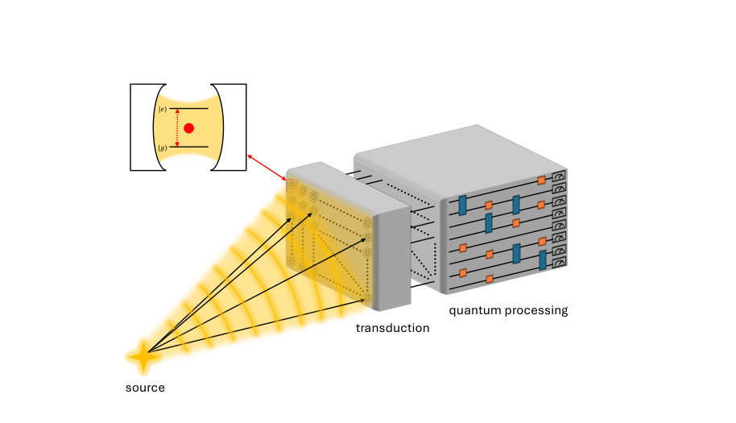
<figcaption class="paper-figure-caption"><b>Fig 1.</b> FIG. 1. Schematic of the QCIS scheme to learn the quantum state of a multimode EM field by first</figcaption>
</figure>
<figure class="paper-figure-card">

<figcaption class="paper-figure-caption"><b>Fig 2.</b> Fig. 1). The transduction for the j-th mode-qubit pair is modeled by a local JC interaction with</figcaption>
</figure>
<figure class="paper-figure-card">
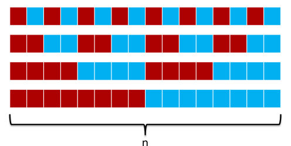
<figcaption class="paper-figure-caption"><b>Fig 3.</b> FIG. 2. Visualization of the proof of Lemma 3 for the ℓ= 4 (9 ≤n ≤16) case. The red blocks denote initial</figcaption>
</figure>
<figure class="paper-figure-card">
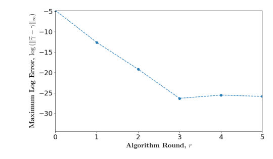
<figcaption class="paper-figure-caption"><b>Fig 4.</b> FIG. 3. Plot of the maximum Gaussian parameter estimation error, ∥eγ −γ∥∞, versus the algorithm round,</figcaption>
</figure>
</div>

<p><strong>Summary.</strong> This paper proposes a method to use quantum computers to efficiently learn the properties of multi-mode Gaussian optical states. It demonstrates that by mapping optical information onto qubits, one can achieve a sample complexity that scales logarithmically with the number of modes and more efficiently with energy than classical methods.</p>
<p><strong>Why it may be interesting.</strong> It bridges quantum information theory with quantum optics by providing a rigorous scaling analysis for using quantum hardware to perform high-precision sensing and imaging of electromagnetic fields.</p>
<details>
<summary>Detailed structure</summary>
<p><strong>Main problem.</strong> Determining the sample complexity required to learn all parameters (means and covariances) of an n-mode Gaussian optical state using a quantum computer.</p>
<p><strong>Main result.</strong> The authors establish that the number of required state copies scales logarithmically with the number of modes n, providing a polynomial advantage in energy dependence compared to existing CV classical shadow protocols.</p>
<p><strong>Method.</strong> The protocol uses a Jaynes-Cummings interaction to transduce optical modes into a qubit register, followed by an iterative algorithm and classical shadows to extract Gaussian moments from Pauli measurements.</p>
<p><strong>Model / system.</strong> An n-mode continuous-variable bosonic electromagnetic field interacting with an n-qubit register via a local Jaynes-Cummings Hamiltonian.</p>
<p><strong>Key observables.</strong> One- and two-qubit Pauli observables (e.g., X, Y, Z, XX, YY) on the transduced qubit register.</p>
<p><strong>Important parameters / regimes.</strong> Number of modes (n), maximum energy per mode (E_max), target additive error (epsilon), and failure probability (delta).</p>
<p><strong>Assumptions / limitations.</strong> The optical state is Gaussian; the Jaynes-Cummimng interaction is kept in the perturbative regime; and the transduction process is ideal (ignoring experimental noise).</p>
<p><strong>Figures summary.</strong> Figure 1 shows the transduction schematic; Figure 2 illustrates the inductive proof for state selection; Figure 3 demonstrates the rapid convergence of the error reduction algorithm.</p>
<p><strong>Paper structure.</strong> The paper introduces the problem of Gaussian state learning, defines the QCIS transduction model via Jaynes-Cummings interaction, provides a mathematical reduction of the n-mode problem to a two-mode problem, presents an iterative algorithm for parameter extraction, and concludes with a complexity analysis comparing the results to CV classical shadows.</p>
</details>
<details>
<summary>Abstract</summary>
<p>Recent results have established dramatic advantages in learning properties of quantum states when a quantum computer is available to process or jointly measure multiple copies of the unknown quantum state. Learning tasks can be accomplished with exponentially fewer copies of the state when compared to optimized classical learning strategies that are restricted to measuring one copy of the state at a time. While these results were established in abstract settings and for artificial learning tasks, they motivate the application of quantum computers to imaging and sensing of weak electromagnetic fields since these settings are ultimately concerned with the learning of unknown quantum states. In this work we apply these new results in quantum learning to the problem of learning Gaussian states of the electromagnetic field, which are germane since they describe most fields used in imaging and sensing. In order to connect with quantum learning theory, we consider the transduction of an $n$-mode Gaussian state into a register of qubits on a quantum computer followed by optimized measurements on these qubits to extract the parameters defining the original Gaussian state. We rigorously bound the number of copies of the Gaussian state required to achieve worst-case additive error in parameter estimates. The scaling of this bound with $n$ is exponentially better than naïve strategies for characterizing Gaussian states and matches recently derived bounds for characterization of Gaussian states using continuous-variable (CV) classical shadows. In addition, our bound has a polynomially better dependence on the energy of the multimode Gaussian state compared to the CV shadows protocol.</p>
</details>
<p><sub><a href="#top">↑ back to top</a></sub></p>

<p><a id="paper-2605.05345"></a></p>
<h3 id="squeezed-vibrational-states-in-superfluid-helium"><a href="http://arxiv.org/abs/2605.05345v1">Squeezed Vibrational States in Superfluid Helium</a></h3>
<p><strong>Authors:</strong> Lev A. Melnikovsky<br>
<strong>Type:</strong> theory · <strong>Category:</strong> quantum gases · <strong>PDF:</strong> <a href="https://arxiv.org/pdf/2605.05345v1">https://arxiv.org/pdf/2605.05345v1</a><br>
<strong>Analysis basis:</strong> full PDF text, analyzed in chunks
<strong>Topic relevance:</strong> <code>non-equilibrium dynamics</code> <strong>3/5</strong> · <code>Keldysh / 2PI / non-Gaussian methods</code> <strong>2/5</strong> · <code>driven-dissipative phase transition</code> <strong>1/5</strong> · <code>entanglement &amp; information structure</code> <strong>1/5</strong></p>
<div class="figure-strip-hint">↔ Scroll figures horizontally</div>
<div class="paper-figures-scroll">
<figure class="paper-figure-card">
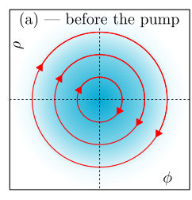
<figcaption class="paper-figure-caption"><b>Fig 1.</b> Figure 1: Wigner quasi-probability distribution in the phase space (ϕ, ρ). The thermal state in (a) is stationary under the circular flow of free harmonic oscil- lator evolution (shown in red). The pump pulse “skews” the distribution such that it is no longer circularly symmetric. Birefringence, given by the average ρ2 , is unchanged by the pump itself, but oscillates subsequently since the squeezed state (b) is no longer stationary.</figcaption>
</figure>
</div>

<p><strong>Summary.</strong> The paper proposes that ultrafast laser pulses create squeezed states of quasiparticle pairs in superfluid helium. It shows that the observed birefringence oscillations arise from the interference of multiple vibrational modes, including rotons and maxons.</p>
<p><strong>Why it may be interesting.</strong> It demonstrates a macroscopic manifestation of quantum squeezing in a condensed matter system and provides a framework for understanding how ultrafast pulses drive non-equilibrium quantum states in many-body systems.</p>
<details>
<summary>Detailed structure</summary>
<p><strong>Main problem.</strong> Explaining the origin of ultrafast birefringence oscillations and the nonzero initial phase observed in superfluid helium following intense femtosecond laser pulse excitation.</p>
<p><strong>Main result.</strong> The pump pulse induces an anisotropic squeezed quantum state of quasiparticle pairs, where the observed birefringence signal is a superposition of contributions from various modes (rotons, maxons, and Pitaevskii's plateau).</p>
<p><strong>Method.</strong> A quantum mechanical treatment of the permittivity tensor operator and the evolution of density fluctuation operators using Heisenberg equations of motion and the stationary-phase approximation.</p>
<p><strong>Model / system.</strong> Bulk liquid 4He below the lambda point, modeled as a gas of polarizable quasiparticles (rotons, maxons, and Pitaevskii's plateau) treated as harmonic oscillators under a pump electric field.</p>
<p><strong>Key observables.</strong> Ultrafast optical birefringence oscillations, polarization change of a time-delayed probe pulse, and local refractive-index modulation.</p>
<p><strong>Important parameters / regimes.</strong> Pump intensity ~ 10^12 W/cm^2, pulse duration ~ 70 fs, roton energy ~ 17 K, and low-temperature regime where signal is dominated by zero-point vibrations.</p>
<p><strong>Assumptions / limitations.</strong> The pump electric field is treated classically, the system starts in thermal equilibrium, and the short-pulse approximation is used for the evolution operator.</p>
<p><strong>Figures summary.</strong> Figure 1 shows a Wigner quasi-probability distribution in phase space, comparing a stationary thermal state (circular symmetry) to a skewed squeezed state produced by the pump.</p>
<p><strong>Paper structure.</strong> The paper identifies the problem of birefringence oscillations, introduces a Hamiltonian model for quasiparticle squeezing, applies mathematical approximations (stationary-phase, short-pulse) to calculate the response, and analyzes the resulting signal and phase.</p>
</details>
<details>
<summary>Abstract</summary>
<p>Ultrafast birefringence oscillations observed in superfluid helium provide evidence for anisotropic quantum squeezing of quasiparticle pairs. The measured response is a superposition of contributions from all vibrational modes, with dominant contributions from rotons, maxons, and Pitaevskii's plateau. The nonzero initial phase follows naturally from multimode interference.</p>
</details>
<p><sub><a href="#top">↑ back to top</a></sub></p>

<p><a id="paper-2605.06452"></a></p>
<h3 id="tight-contraction-rates-for-primitive-channels-under-quantum-math71math-divergences"><a href="http://arxiv.org/abs/2605.06452v1">Tight Contraction Rates for Primitive Channels under Quantum $f$-Divergences</a></h3>
<p><strong>Authors:</strong> Matthew Simon Tan, Marco Tomamichel, Ian George<br>
<strong>Type:</strong> theory · <strong>Category:</strong> quantum information and computing · <strong>PDF:</strong> <a href="https://arxiv.org/pdf/2605.06452v1">https://arxiv.org/pdf/2605.06452v1</a><br>
<strong>Analysis basis:</strong> full PDF text, analyzed in chunks
<strong>Topic relevance:</strong> <code>entanglement &amp; information structure</code> <strong>3/5</strong> · <code>methods for driven-dissipative</code> <strong>2/5</strong> · <code>non-equilibrium dynamics</code> <strong>2/5</strong></p>
<div class="figure-strip-hint">↔ Scroll figures horizontally</div>
<div class="paper-figures-scroll">
<figure class="paper-figure-card">
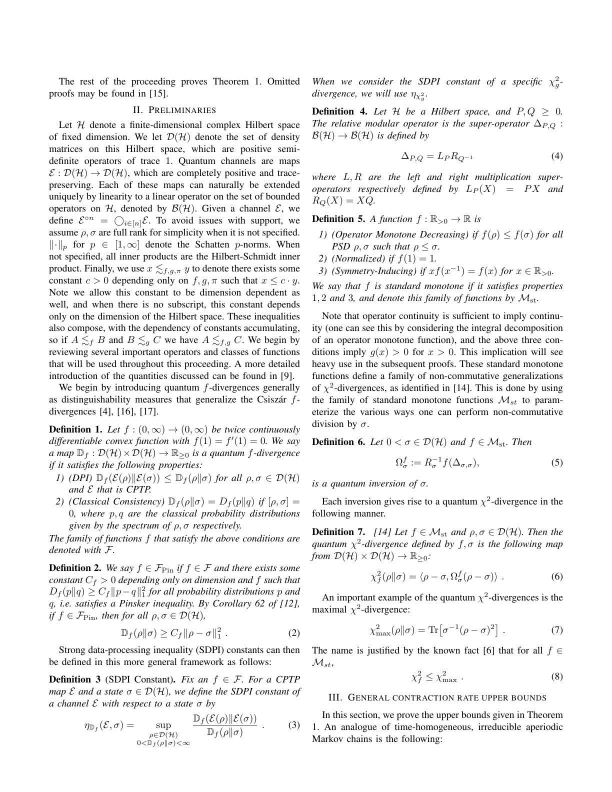
<figcaption class="paper-figure-caption"><b>Fig 1.</b> Low-resolution page preview, page 2</figcaption>
</figure>
<figure class="paper-figure-card">
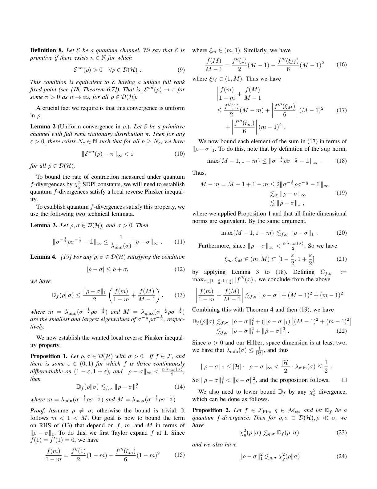
<figcaption class="paper-figure-caption"><b>Fig 2.</b> Low-resolution page preview, page 3</figcaption>
</figure>
<figure class="paper-figure-card">
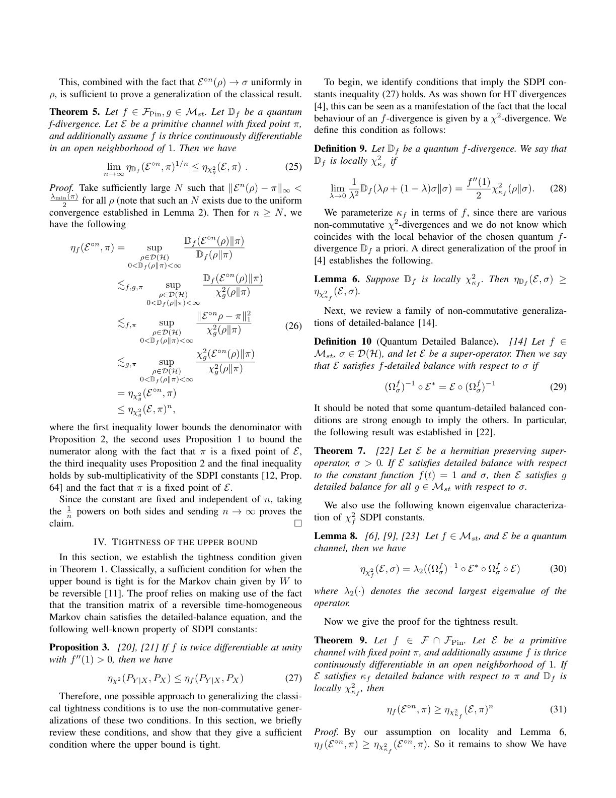
<figcaption class="paper-figure-caption"><b>Fig 3.</b> Low-resolution page preview, page 4</figcaption>
</figure>
<figure class="paper-figure-card">
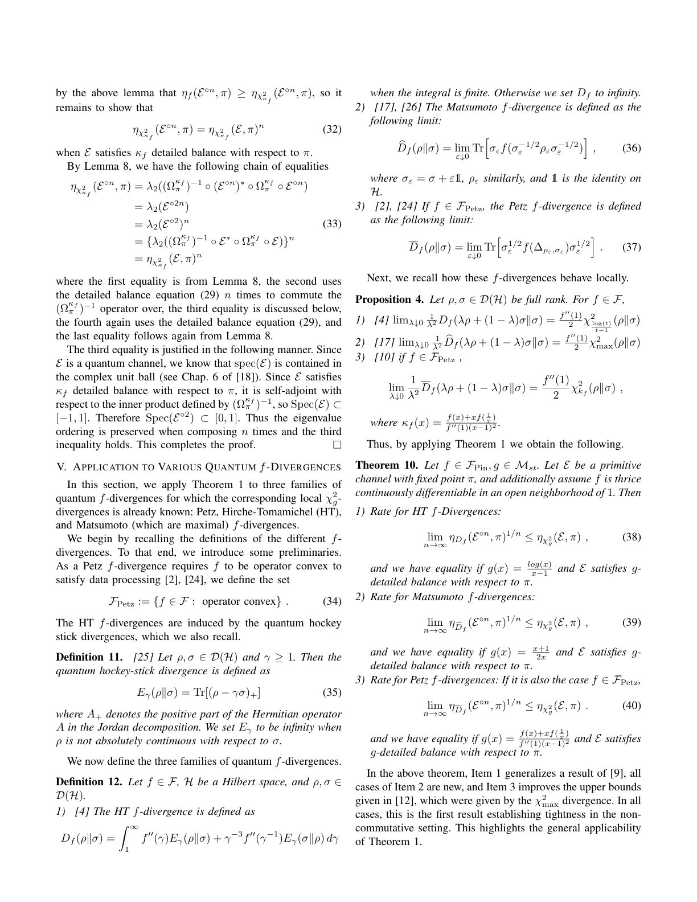
<figcaption class="paper-figure-caption"><b>Fig 4.</b> Low-resolution page preview, page 5</figcaption>
</figure>
<figure class="paper-figure-card">
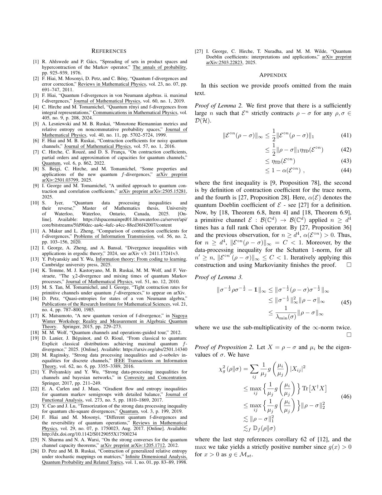
<figcaption class="paper-figure-caption"><b>Fig 5.</b> Low-resolution page preview, page 6</figcaption>
</figure>
</div>

<p><strong>Summary.</strong> This paper establishes new, tight upper bounds on the rate at which quantum channels contract different measures of distinguishability toward a stationary state. By relating f-divergences to chi^2-divergences, the authors provide a framework to calculate exact contraction rates for specific families of quantum divergences. This advances the understanding of information loss in non-commutative quantum processes.</p>
<p><strong>Why it may be interesting.</strong> This work is highly relevant for researchers in open quantum systems as it provides fundamental bounds on how quickly quantum information/distinguishability decays under the influence of noise and environmental interaction.</p>
<details>
<summary>Detailed structure</summary>
<p><strong>Main problem.</strong> Determining the tightest possible asymptotic contraction rates for primitive quantum channels under various quantum f-divergences and establishing conditions for the tightness of these bounds in a non-commutative setting.</p>
<p><strong>Main result.</strong> The authors prove that the asymptotic contraction rate of a primitive channel to its stationary state is upper bounded by the SDPI constant of any non-commutative chi^2_g-divergence, and establish that this bound is tight under quantum detailed balance conditions.</p>
<p><strong>Method.</strong> The study employs Taylor expansions of f-divergences near the identity to establish a local reverse Pinsker inequality, utilizes spectral analysis of channel eigenvalues, and applies the concept of quantum f-detailed balance.</p>
<p><strong>Model / system.</strong> The mathematical model consists of primitive, time-homogeneous quantum channels acting on density matrices in a finite-dimensional Hilbert space, assuming a unique, full-rank stationary state.</p>
<p><strong>Key observables.</strong> Strong Data-Processing Inequality (SDPI) constants, quantum f-divergences, and the asymptotic contraction rate of the channel.</p>
<p><strong>Important parameters / regimes.</strong> The asymptotic regime (n approaching infinity), the primitivity of the channel, and the smoothness (thrice continuous differentiability) of the function f.</p>
<p><strong>Assumptions / limitations.</strong> The quantum channels must be primitive, the stationary state must be full-rank, and the function f must be thrice continuously differentiable in a neighborhood of 1.</p>
<p><strong>Paper structure.</strong> The paper begins by establishing a local reverse Pinsker inequality, moves to proving general upper bounds for asymptotic contraction rates, provides conditions for the tightness of these bounds using detailed balance, and concludes with specific applications to Petz, Matsumoto, and Hirche-Tomamichel f-divergences.</p>
</details>
<details>
<summary>Abstract</summary>
<p>Data-processing inequalities capture the phenomenon that two probability distributions can only become less distinguishable under any common post-processing. For more fine-grained inequalities, one turns to strong data-processing inequality (SDPI) constants, which give the strongest inequalities for a given channel and reference state for a fixed measure of distinguishability. These quantities have been used to quantify the rate at which time-homogeneous Markov chains contract towards a fixed point both in the classical and quantum setting. In this work, we establish that quantum $f$-divergences satisfy a local reverse Pinsker inequality, which implies the asymptotic contraction rate of a primitive channel to its stationary state is upper bounded by the SDPI constant of any non-commutative $χ^2$-divergence. Using quantum-detailed balance, we establish a sufficient condition for these bounds to be tight. Finally, we apply these results to Petz, Matsumoto, and Hirche-Tomamichel $f$-divergences, establishing new and strengthening previously known results.</p>
</details>
<p><sub><a href="#top">↑ back to top</a></sub></p>

<p><a id="paper-2605.05299"></a></p>
<h3 id="universal-neural-propagator-learning-time-evolution-in-many-body-quantum-systems"><a href="http://arxiv.org/abs/2605.05299v1">Universal Neural Propagator: Learning Time Evolution in Many-Body Quantum Systems</a></h3>
<p><strong>Authors:</strong> Zihao Qi, Christopher Earls, Yang Peng<br>
<strong>Type:</strong> theory · <strong>Category:</strong> numerical methods · <strong>PDF:</strong> <a href="https://arxiv.org/pdf/2605.05299v1">https://arxiv.org/pdf/2605.05299v1</a><br>
<strong>Analysis basis:</strong> full PDF text, analyzed in chunks
<strong>Topic relevance:</strong> <code>non-equilibrium dynamics</code> <strong>3/5</strong> · <code>entanglement &amp; information structure</code> <strong>2/5</strong> · <code>methods for driven-dissipative</code> <strong>2/5</strong></p>
<div class="figure-strip-hint">↔ Scroll figures horizontally</div>
<div class="paper-figures-scroll">
<figure class="paper-figure-card">
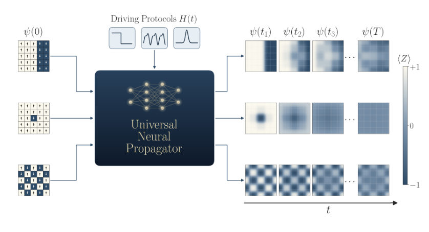
<figcaption class="paper-figure-caption"><b>Fig 1.</b> FIG. 1. Illustration of the Universal Neural Propagator (UNP) framework. For any driving protocol ˆH(t), the corresponding time-evolution quantum propagator ˆU(t) is predicted by a neural-network-operator hybrid UNP architecture. The learned propagator can be further applied to track time evolution starting from arbitrary initial states in a given computational basis. A single, unified UNP model allows for transferring across an infinite-dimensional functional space of driving protocols and an exponentially large space of initial states, predicting time dependent observables at any time in the training interval.</figcaption>
</figure>
<figure class="paper-figure-card">
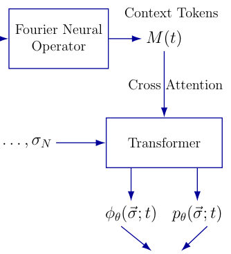
<figcaption class="paper-figure-caption"><b>Fig 2.</b> FIG. 2. The architecture diagram of the UNP model. Driving protocols H(t) are processed by a Fourier Neural Operator (FNO) and distilled into a set of context tokens M(t) that encode the temporal structure of driving. The Transformer backbone of UNP processes this information through cross attention to assign an amplitude p(σ; t) and phase ϕ(σ; t) for each spin configuration σ in the doubled space. The phase and amplitude are combined to produce the matrix element Uαβ(t).</figcaption>
</figure>
<figure class="paper-figure-card">
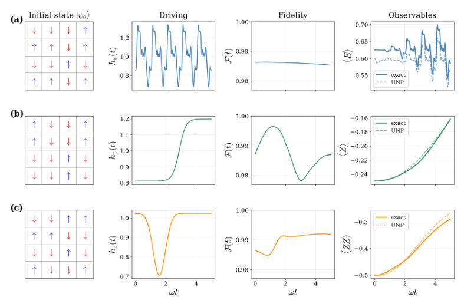
<figcaption class="paper-figure-caption"><b>Fig 3.</b> FIG. 3. Evaluation of the performance of Universal Neural Propagator for a driven TFIM with system size 4 × 4. Each row corresponds to a different computational-basis product state and a different time-dependent driving protocol. The four columns show: the initial spin configuration, the driving protocol, the state fidelity F(t) between the exactly evolved state and the UNP-predicted evolution, and a representative local observable, respectively. (a) Performance on an in-distribution driving field. (b, c) UNP predictions for out-of-distribution but experimentally realistic driving protocols: a tanh ramp-up and a Gaussian pulse. The same UNP model is used across all panels without...</figcaption>
</figure>
<figure class="paper-figure-card">
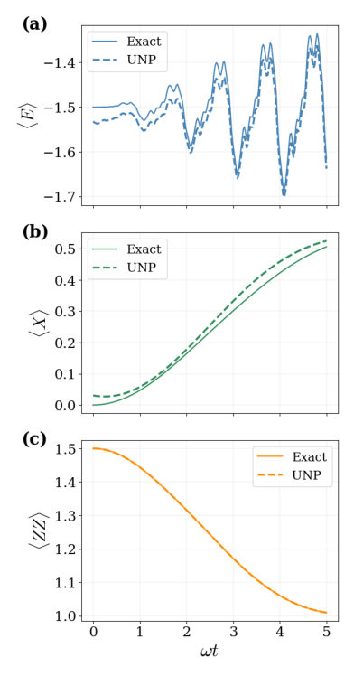
<figcaption class="paper-figure-caption"><b>Fig 4.</b> FIG. 4. Time-evolution starting from the GHZ state (Eq. 34). Because the UNP predicts a propagator, the time evolution of a coherent superposition is obtained by linearly combining the individually propagated computational-basis components. The driving protocols are (a) in the training distribution; (b) a tanh ramp-up; (c) a Gaussian pulse, and are different from the ones in Fig. 3. Agreement with exact evolution from this state shows not only the accuracy of individual columns of eU(t), but also their relative phase structure.</figcaption>
</figure>
<figure class="paper-figure-card">
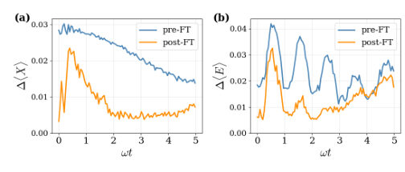
<figcaption class="paper-figure-caption"><b>Fig 5.</b> FIG. 5. Mean absolute error (MAE) of local observables, be- fore and after fine-tuning the propagator. (a): MAE of the x-magnetization ⟨X⟩; (b): MAE of the energy per spin ⟨E⟩. Both quantities are averaged over 50 random z-basis prod- uct states that have not been seen during fine-tuning. Fine- tuning using only a small number of initial states consistently improves the propagator’s performance across the entire time interval.</figcaption>
</figure>
</div>

<p><strong>Summary.</strong> The paper presents the Universal Neural Propagator (UNP), a machine learning model that learns to predict the time-evolution of many-body quantum systems. Unlike previous methods, it can simultaneously generalize to new driving protocols and new initial states. This approach enables efficient, scalable simulation of driven quantum matter beyond the limits of exact diagonalization.</p>
<p><strong>Why it may be interesting.</strong> It proposes a paradigm shift from learning individual quantum states to learning the underlying operators, providing a foundation model approach that could be extended to dissipative dynamics via Liouville-space superoperators.</p>
<details>
<summary>Detailed structure</summary>
<p><strong>Main problem.</strong> Existing neural network approaches for quantum dynamics are limited to transferring across either Hamiltonians or initial states, but not both simultaneously, requiring new simulations to be re-performed if parameters change.</p>
<p><strong>Main result.</strong> The introduction of the Universal Neural Propagator (UNP), which achieves simultaneous transferability across driving protocols and initial states, maintaining high accuracy even for system sizes beyond exact diagonalization.</p>
<p><strong>Method.</strong> A self-supervised hybrid architecture combining a Fourier Neural Operator (FNO) to process driving protocols and an autoregressive Transformer to predict the time-evolution propagator in a doubled Hilbert space.</p>
<p><strong>Model / system.</strong> A two-dimensional driven transverse-field Ising model on a square lattice with time-dependent longitudinal and transverse fields.</p>
<p><strong>Key observables.</strong> State fidelity, local magnetization (z and x directions), energy per spin, and ZZ-correlators.</p>
<p><strong>Important parameters / regimes.</strong> System sizes of 4x4 and 6x6; driving protocols modeled via random Fourier series; training on a single NVIDIA H100 GPU.</p>
<p><strong>Assumptions / limitations.</strong> Assumes general initial states can be expressed as linear combinations of computational basis states; scalability is limited by VRAM for larger system sizes.</p>
<p><strong>Figures summary.</strong> Figure 1 shows the UNP framework; Figure 2 details the FNO-Transformer architecture; Figure 3 demonstrates accuracy and transferability on 4x4 systems; Figure 4 shows fine-tuning efficiency; Figure 5 illustrates error reduction after fine-tuning; Figure 6 compares 6x6 results with tDMRG.</p>
<p><strong>Paper structure.</strong> The paper introduces the limitation of single-trajectory simulations, presents the UNP architecture (FNO and Transformer), describes the self-supervised training objective based on the Schrödinger equation, validates the model via 2D Ising model benchmarks (accuracy, transferability, and scalability), and discusses future extensions to open quantum systems.</p>
</details>
<details>
<summary>Abstract</summary>
<p>Conventional approaches to simulating quantum many-body dynamics produce a single trajectory: if the Hamiltonian or the initial state is changed, the computation must be re-performed. Recent efforts toward foundation models have begun to address this limitation, yet existing methods transfer across either Hamiltonians or initial states, but not both. In this work, we introduce the Universal Neural Propagator (UNP), a single, unified model that learns the functional mapping from driving protocols to time-evolution propagators. Trained in an entirely self-supervised way, a single UNP model predicts dynamics across a function space of driving protocols and an exponentially large Hilbert space of initial states simultaneously. We benchmark on a two-dimensional driven Ising model and demonstrate the UNP's accuracy and transferability across product and entangled initial states, as well as for both in- and out-of-distribution driving protocols. The UNP remains accurate at system sizes beyond exact diagonalization, and can be efficiently fine-tuned across all initial states using observable data. By shifting the object of learning from quantum states to operators, this work opens a route toward transferable simulation of driven quantum matter.</p>
</details>
<p><sub><a href="#top">↑ back to top</a></sub></p>

<p><a id="paper-2605.05431"></a></p>
<h3 id="a-transition-in-the-hole-probability-at-finite-temperature-for-free-fermions-in-math75math-dimensions"><a href="http://arxiv.org/abs/2605.05431v1">A transition in the hole probability at finite temperature for free fermions in $d$ dimensions</a></h3>
<p><strong>Authors:</strong> Giuseppe Del Vecchio Del Vecchio, Pierre Le Doussal, Gregory Schehr<br>
<strong>Type:</strong> theory · <strong>Category:</strong> quantum gases · <strong>PDF:</strong> <a href="https://arxiv.org/pdf/2605.05431v1">https://arxiv.org/pdf/2605.05431v1</a><br>
<strong>Analysis basis:</strong> full PDF text, analyzed in chunks
<strong>Topic relevance:</strong> <code>entanglement &amp; information structure</code> <strong>3/5</strong> · <code>analog quantum simulation</code> <strong>2/5</strong></p>
<div class="figure-strip-hint">↔ Scroll figures horizontally</div>
<div class="paper-figures-scroll">
<figure class="paper-figure-card">
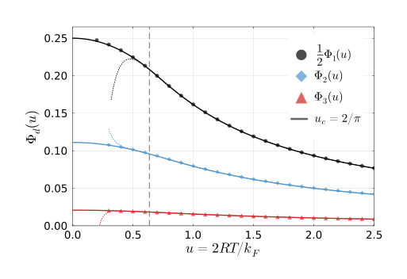
<figcaption class="paper-figure-caption"><b>Fig 1.</b> FIG. 1. Scaling function Φd(u) for the hole probability P(R, T) of a spherical domain of radius R at low temperature defined in (6) for d = 1, 2, 3. The solid line is the theoretical prediction (7)-(10). The dots are obtained from a numerical evaluation of the Fredholm determinant in (18)-(19), followed by an extrapolation from finite z data, see Fig. 2 in End Mat- ter. The location of the predicted transition of order 3</figcaption>
</figure>
<figure class="paper-figure-card">
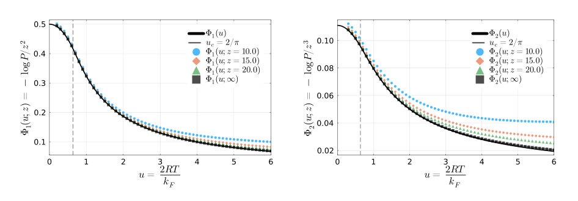
<figcaption class="paper-figure-caption"><b>Fig 2.</b> FIG. 2. Plots of −log P(R, T)/zd+1 in d = 1 (left) and d = 2 (right) as a function of u for different values of z = 10, 15, 20 from top to bottom. We recall that in d = 1 one has P(R, T) = Det(I −Π[−R,R] ˆK) where ˆK is the finite T sine-kernel (78) while in d ≥2 we use the angular decomposition Eq. (18) in the main text. In both cases, d = 1, 2, the markers correspond to the numerical evaluation of the Fredholm determinant as explained in [49]. The solid black line corresponds to the analytic predictions in Eqs. (8)-(10) specialized to d = 1 (left) and d = 2 (right). In both plots the dashed vertical line indicates the critical point uc = 2/π. The extrapolated value Φ1,2(u; ∞) (squares) is...</figcaption>
</figure>
<figure class="paper-figure-card">
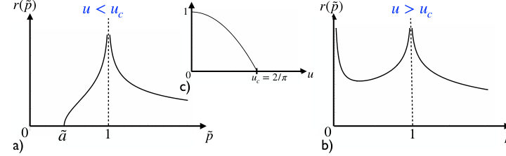
<figcaption class="paper-figure-caption"><b>Fig 3.</b> FIG. 3. Plot of the scaled density ˜r(˜p) of the underlying CG in the low temperature regime, as given in Eq. (25), vs ˜p for u &lt; uc (left panel a) and u &gt; uc (right panel b). The middle panel c) shows a plot of the gap ˜a ≡˜ac(u) vs u, as given in Eq. (24). Expressed in the original momentum variables, the gap is kgap = p</figcaption>
</figure>
<figure class="paper-figure-card">
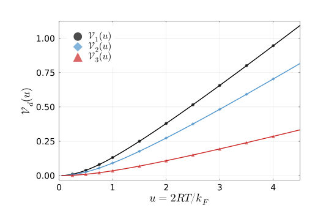
<figcaption class="paper-figure-caption"><b>Fig 4.</b> FIG. 4. Scaling functions Vd(u) of the variance of the number of particles obtained via numerical quadrature of Eq. (356) and subtracting the zero temperature variance ⟨N 2 R⟩c|T =0 in Eq. (362) (markers) compared to our analytic prediction (full lines) given in Eq. (36). See see [49] for details.</figcaption>
</figure>
<figure class="paper-figure-card">
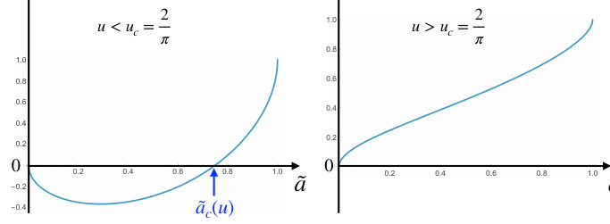
<figcaption class="paper-figure-caption"><b>Fig 5.</b> FIG. 5. Plot of fu(˜a) vs ˜a for two different values of u, both u &lt; uc (left panel) and u &gt; uc (right panel). This shows that ˜a = ˜a(u, λ), the root of λ = fu(˜a), behaves differently in each phase.</figcaption>
</figure>
</div>

<p><strong>Summary.</strong> The paper investigates the probability of finding an empty region in a free fermion gas at finite temperature. It discovers a sharp phase transition in the scaling of this probability at a universal critical temperature, driven by a change in the density profile of an associated effective Coulomb gas.</p>
<p><strong>Why it may be interesting.</strong> This work provides exact analytical results for the statistics of fermion density fluctuations, which is directly relevant to understanding the stability and correlations in ultracold Fermi gases and the emergence of macroscopic gaps in quantum systems.</p>
<details>
<summary>Detailed structure</summary>
<p><strong>Main problem.</strong> Characterizing the crossover and phase transition in the counting statistics of free fermions between high-temperature (classical/Poissonian) and low-temperature (quantum) regimes, specifically focusing on the hole probability.</p>
<p><strong>Main result.</strong> The authors identify a sharp transition of order 3/2(d+1) at a universal critical value u_c = 2/pi, associated with the emergence of a macroscopic gap in the optimal density of an effective Coulomb gas.</p>
<p><strong>Method.</strong> The problem is mapped to an effective Coulomb gas in momentum space and solved using Fredholm determinants, angular decomposition for d &gt;= 2, and numerical extrapolation of finite-size corrections.</p>
<p><strong>Model / system.</strong> A system of non-interacting (free) fermions in d dimensions (d=1, 2, 3) in a grand canonical ensemble, described by a determinantal point process with a kernel related to the Fermi factor.</p>
<p><strong>Key observables.</strong> Hole probability P(R, T), scaling function Phi_d(u), number variance, and entanglement entropy.</p>
<p><strong>Important parameters / regimes.</strong> Dimension d, temperature T, Fermi momentum k_F, radius R, and the dimensionless scaling variable u = 2TR/k_F.</p>
<p><strong>Assumptions / limitations.</strong> The system is non-interacting; the analysis focuses on the large radius limit (z -&gt; infinity); the transition is analyzed within the context of the Coulomb gas mapping.</p>
<p><strong>Figures summary.</strong> Plots of the scaling function Phi_d(u) for different dimensions, the scaled density profile and gap size, and numerical error analysis showing the effectiveness of the z^-2 extrapolation.</p>
<p><strong>Paper structure.</strong> The paper introduces the problem of hole probability, defines the physical model and regimes, develops the analytical Coulomb gas mapping and scaling functions, provides numerical verification using Fredholm determinants, and discusses the transition and error analysis.</p>
</details>
<details>
<summary>Abstract</summary>
<p>In a free Fermi gas at temperature $T$ much higher than the Fermi temperature one expects that the fluctuations of the number of particles in a given region has Poissonian/classical statistics. On the other hand at low temperature the Pauli exclusion principle leads to non trivial counting statistics. It is of great interest from a theoretical and experimental point of view to characterize the crossover between these two limits. Here we focus on the hole probability $P(R,T)$, i.e. the probability that a region of size $R$ is devoid of particles, in dimension $d$, and on the case of a spherical region of large radius $R$. We show that at low temperature it takes the scaling form $P(R,T)\sim \exp\big[-(k_F R)^{d+1}Φ_d(u=2R\,T/k_F)\big],$ where $k_F$ is the Fermi momentum. By mapping the problem to an effective Coulomb gas, we compute exactly the scaling function $Φ_d(u)$ in any dimension. Remarkably, it exhibits a transition of order $\tfrac{3}{2}(d+1)$ at the universal critical value $u_c=2/π$, signaling a sharp change in the mechanism of rare fluctuations, associated with the emergence of a macroscopic gap in the optimal density of the associated Coulomb gas. Our analytical predictions are supported by precise numerical evaluations of the corresponding Fredholm determinants.</p>
</details>
<p><sub><a href="#top">↑ back to top</a></sub></p>

<p><a id="paper-2605.05315"></a></p>
<h3 id="two-layers-no-swaps-biplanar-spoqc-architecture-improves-runtime-of-fermi-hubbard-simulation"><a href="http://arxiv.org/abs/2605.05315v1">Two Layers, No Swaps: Biplanar SPOQC Architecture Improves Runtime of Fermi-Hubbard Simulation</a></h3>
<p><strong>Authors:</strong> Boris Bourdoncle, Peter-Jan Derks, Théo Dessertaine, Johannes Frank<br>
<strong>Type:</strong> theory · <strong>Category:</strong> quantum information and computing · <strong>PDF:</strong> <a href="https://arxiv.org/pdf/2605.05315v1">https://arxiv.org/pdf/2605.05315v1</a><br>
<strong>Analysis basis:</strong> full PDF text, analyzed in chunks
<strong>Topic relevance:</strong> <code>spintronics-quantum-optics interface</code> <strong>3/5</strong> · <code>exotic spin models in light-matter</code> <strong>2/5</strong></p>
<div class="figure-strip-hint">↔ Scroll figures horizontally</div>
<div class="paper-figures-scroll">
<figure class="paper-figure-card">
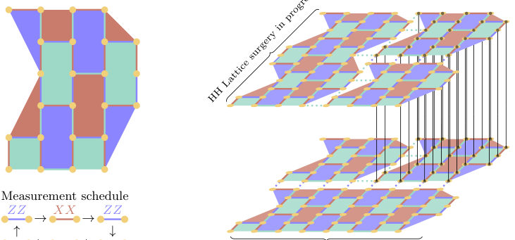
<figcaption class="paper-figure-caption"><b>Fig 1.</b> FIG. 1 (a) An example of a 6×4 (height × width) patch of honeycomb code along with the measurement schedule compatible with this layout from [12]. (b) Bilayer layout studied in this article. Qubits from U (resp. D) are laid out on the upper plane (resp. lower) plane. Colored edges represent intra-plane connectivity to implement parity measurements for honeycomb code syndrome extraction and lattice surgery, while black edges represent inter-plane connectivity to implement transversal CNOT gates. For clarity, we have represented the inter-plane connections only between the upper and lower top-rightmost patches. Dashed edges represent connections between patches that are only active whenever...</figcaption>
</figure>
<figure class="paper-figure-card">
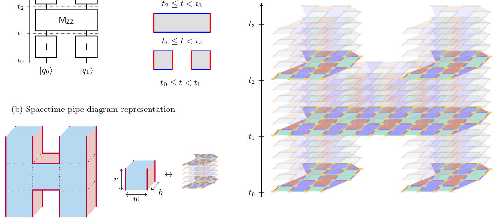
<figcaption class="paper-figure-caption"><b>Fig 2.</b> FIG. 2 Four representations of a two-qubit MZZ lattice surgery operation. (a) Circuit representation. (b) Spacetime pipe diagram, consisting of seven lattice surgery cubes of width w, height h and number of rounds r. (c) Macroscopic representation obtained by slicing the pipe diagram along the time axis. Red and blue boundaries indicate smooth and rough boundaries, respectively. (d) Microscopic honeycomb code representation. Here, an auxiliary patch mediates the operation between the two patches; if the patches are adjacent, no auxiliary is needed.</figcaption>
</figure>
<figure class="paper-figure-card">
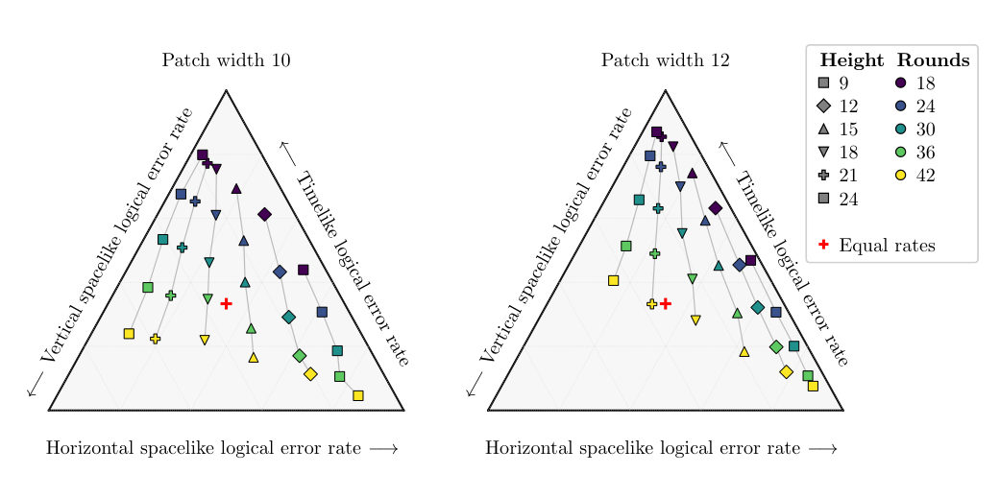
<figcaption class="paper-figure-caption"><b>Fig 3.</b> FIG. 3 Ternary plots of the relative contributions of horizontal spacelike, vertical spacelike, and timelike logical errors to the total logical error rate. A cube-root transformation improves readability by spreading points away from the corners. Marker shape denotes patch height, colour denotes the number of syndrome measurement rounds, and grey lines connect points of equal height across increasing rounds. The red cross marks equal error contributions. All data were obtained at p = 0.01 using PyMatching [48]. For both patch widths, the error rates are closest to equal when the height is 3/5w and the number of syndrome rounds is 3/10w. The details about the numerical simulations performed...</figcaption>
</figure>
<figure class="paper-figure-card">
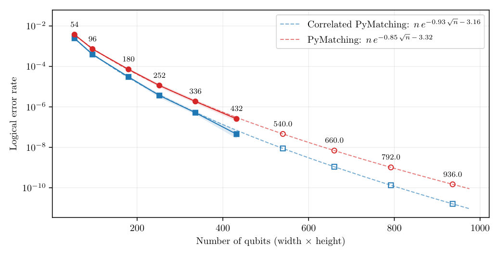
<figcaption class="paper-figure-caption"><b>Fig 4.</b> FIG. 4 Combined spacelike logical error rate EHV = 1−(1−EH)(1−EV ) as a function of the number of physical qubits (width × height). Solid markers show Monte Carlo estimates with shaded 95% confidence intervals computed using two-level variance estimation over heralding outcomes. Dashed lines show exponential fits in log space. Open markers indicate extrapolated values at larger block sizes. Results are shown for both independent PyMatching [48] and correlated matching decoders [53]. All circuits are simulated using Stim [19].</figcaption>
</figure>
<figure class="paper-figure-card">
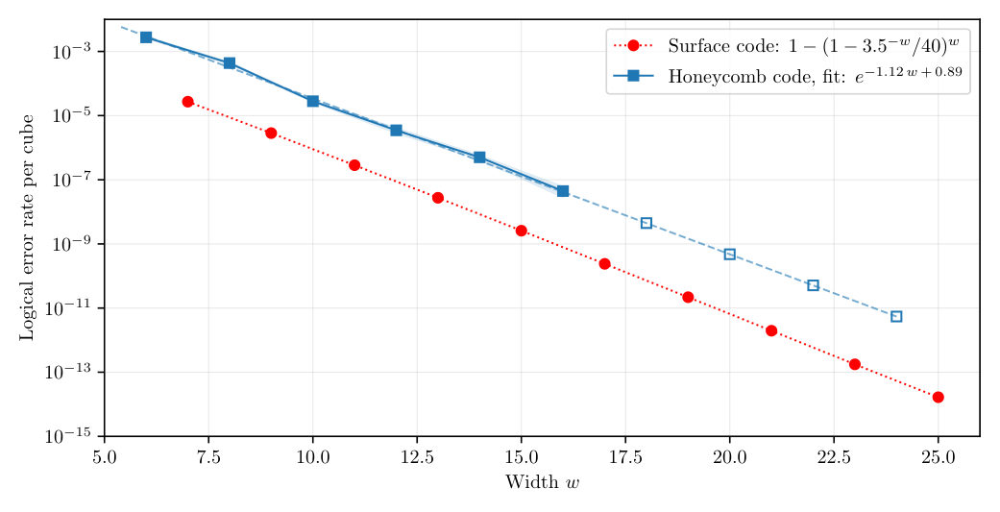
<figcaption class="paper-figure-caption"><b>Fig 5.</b> FIG. 5 To get the same logical error rate per cube, the width of the honeycomb code must be ≈1.25× the width of the surface code. The logical error rate per round is calculated as pr = 1 −(1 −E)1/nr from the data used to produce Figure 4. The data for the surface code is taken from Ref. [15, Figure 6].</figcaption>
</figure>
</div>

<p><strong>Summary.</strong> The paper proposes a two-layer quantum computing architecture that eliminates the need for costly fermionic swap operations when simulating the Fermi-Hubbard model. While this significantly reduces circuit depth, the authors identify that the parallel execution of rotation synthesis creates a new scalability bottleneck. The study provides detailed resource estimates for a regime that is classically intractable.</p>
<p><strong>Why it may be interesting.</strong> It provides a concrete architectural blueprint for simulating strongly correlated systems using a hybrid spin-photon platform, specifically addressing the practical overheads of fault-tolerant error correction and gate synthesis.</p>
<details>
<summary>Detailed structure</summary>
<p><strong>Main problem.</strong> Estimating the quantum computing resources and optimizing the architecture for fault-tolerant simulation of the 2D Fermi-Hubbard model.</p>
<p><strong>Main result.</strong> A biplanar SPOQC architecture reduces the depth of Trotter steps by eliminating fermionic swap operations, though rotation synthesis becomes a scalability bottleneck due to exponential failure probabilities in parallelized settings.</p>
<p><strong>Method.</strong> Architectural co-design using a biplanar honeycomb Floquet code, circuit-level noise modeling, and Clifford+T rotation synthesis analysis.</p>
<p><strong>Model / system.</strong> A Spin-Optical Quantum Computing (SPOQC) architecture using quantum dot spin qubits and photon-mediated interactions, applied to the 2D Fermi-Hubbard model.</p>
<p><strong>Key observables.</strong> Logical error rates (spacelike and timelike), T-count, circuit depth, and total runtime/qubit count.</p>
<p><strong>Important parameters / regimes.</strong> Lattice size L=8, interaction strength U/t=8, physical error rate p=0.01, and 1% diamond norm error budget.</p>
<p><strong>Assumptions / limitations.</strong> All error sources are treated within a single 1% diamond norm budget; photon loss is treated as a heralded error; rotation synthesis failures are analyzed in a parallelized context.</p>
<p><strong>Figures summary.</strong> Visualizations of the honeycomb code and biplanar layout, spacetime diagrams for lattice surgery, ternary plots of error contributions, and plots of logical error rates versus physical qubit count.</p>
<p><strong>Paper structure.</strong> The paper introduces the biplanar SPOQC architecture, details the Fermi-Hublarb mapping and Trotterization, describes the error model and noise parameters, presents resource estimation results, and concludes with an analysis of rotation synthesis bottlenecks.</p>
</details>
<details>
<summary>Abstract</summary>
<p>We estimate the cost of simulating the two-dimensional Fermi-Hubbard model on a biplanar spin-optical quantum computing (SPOQC) architecture. Qubits are encoded in the honeycomb Floquet code, and we use a circuit-level noise model with explicit timings for each native physical operation. We benchmark lattice surgery and magic state preparation within each plane, and transversal CNOT gates between corresponding logical qubits across planes. We compile a plaquette-based Trotterization of the time evolution operator, mapping the two spin sectors of the Fermi-Hubbard model onto two physical planes. This architectural co-design eliminates fermionic swap operations and reduces the depth of each Trotter step to $4t_{\mathrm{synth}} + 90$ logical timesteps, where $t_\mathrm{synth}$ is the logical timestep cost of arbitrary-angle rotations, compared to $6t_\mathrm{synth} + 354$ in prior single-plane compilations. All error sources - algorithmic (Trotter), logical noise, magic state infidelity, and rotation synthesis - are treated jointly within a single 1% diamond norm budget. For an $L\times L$ lattice with hopping amplitude $t$ and on-site interaction strength $U$, setting $L=8$ and $U/t=8$, we estimate a total runtime of approximately $2$ hours using $1.35\times 10^6$ physical qubits. We find that fallback-based rotation synthesis methods become a scalability bottleneck: the probability that all $L^2$ parallel rotations succeed on the first attempt vanishes exponentially with system size, causing the failure branch to dominate the expected runtime already at moderate $L$.</p>
</details>
<p><sub><a href="#top">↑ back to top</a></sub></p>

<p><a id="paper-2605.05764"></a></p>
<h3 id="weighted-phase-space-paths-for-exact-wigner-dynamics"><a href="http://arxiv.org/abs/2605.05764v1">Weighted Phase-Space Paths for Exact Wigner Dynamics</a></h3>
<p><strong>Authors:</strong> Surachate Limkumnerd, Panat Phanthaphanitkul<br>
<strong>Type:</strong> theory · <strong>Category:</strong> numerical methods · <strong>PDF:</strong> <a href="https://arxiv.org/pdf/2605.05764v1">https://arxiv.org/pdf/2605.05764v1</a><br>
<strong>Analysis basis:</strong> full PDF text, analyzed in chunks
<strong>Topic relevance:</strong> <code>methods for driven-dissipative</code> <strong>3/5</strong> · <code>non-equilibrium dynamics</code> <strong>2/5</strong></p>
<div class="figure-strip-hint">↔ Scroll figures horizontally</div>
<div class="paper-figures-scroll">
<figure class="paper-figure-card">
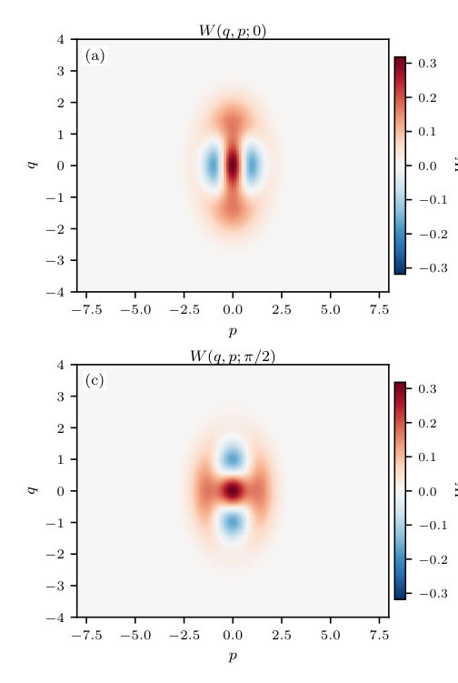
<figcaption class="paper-figure-caption"><b>Fig 1.</b> FIG. 1. Harmonic oscillator null test for the initial state (|0⟩+ |2⟩)/ √</figcaption>
</figure>
<figure class="paper-figure-card">
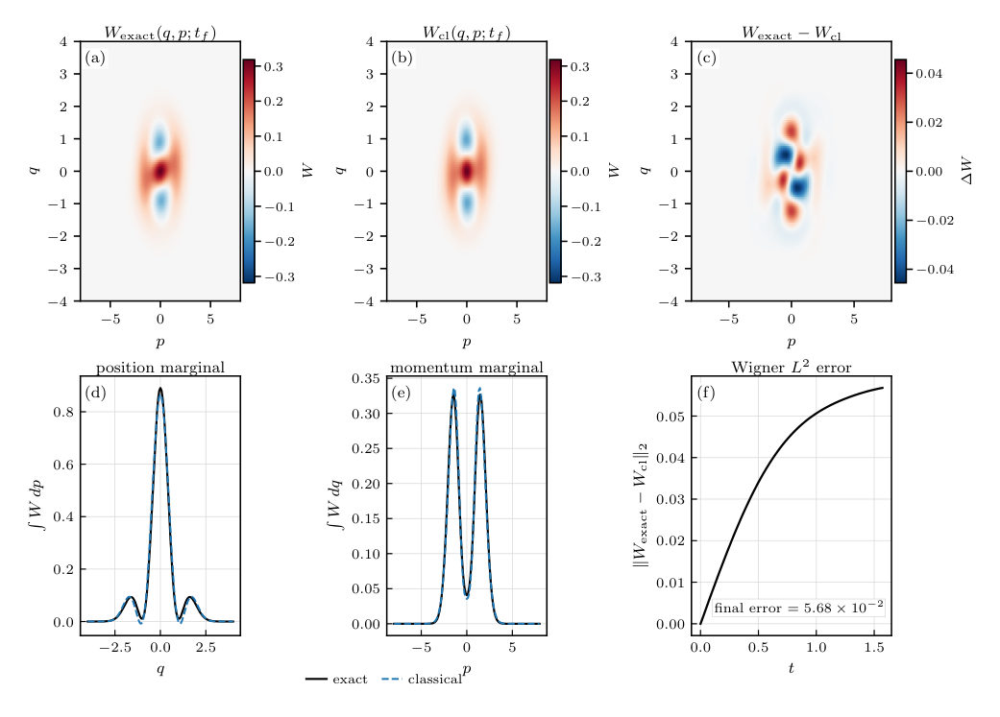
<figcaption class="paper-figure-caption"><b>Fig 2.</b> FIG. 2. Breakdown of classical carrier transport for V (q) = q2/2 + λq4 with λ = 0.02. The exact Wigner evolution obtained from the Schr¨odinger reference solution is compared with classical Liouville transport of the same initial Wigner function. The discrepancy is the finite Moyal residual generated by the anharmonic term, not a boundary artifact or normalization error.</figcaption>
</figure>
<figure class="paper-figure-card">
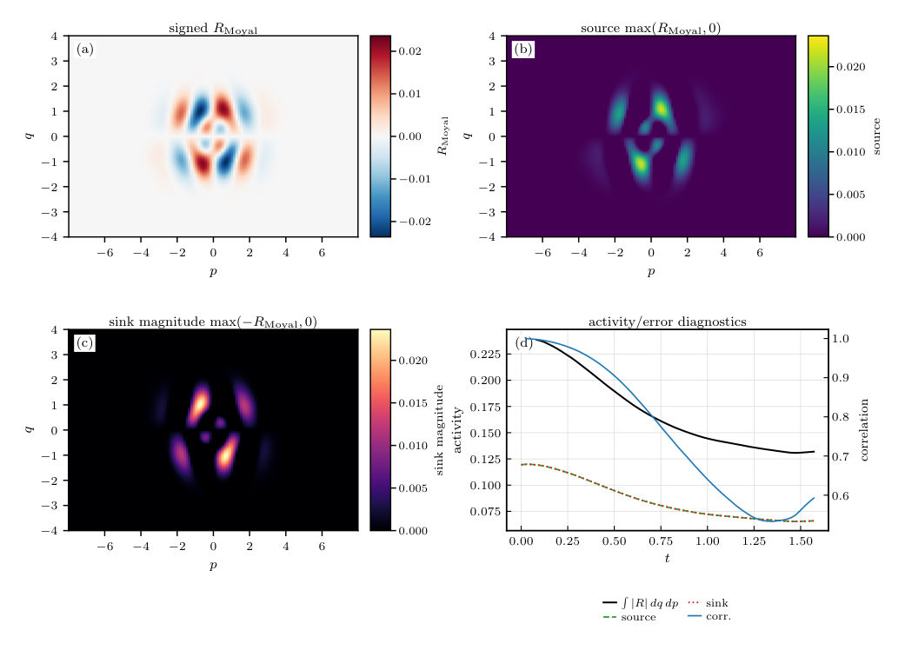
<figcaption class="paper-figure-caption"><b>Fig 3.</b> FIG. 3. Signed Moyal residual for the quartic benchmark. For V (q) = q2/2 + λq4, the nonclassical correction is RMoyal = −λq ∂3 pW in the dimensionless units used here. The positive and negative parts form a signed source–sink structure in phase space, showing why the correction is not an ordinary positive diffusion process on (q, p).</figcaption>
</figure>
<figure class="paper-figure-card">
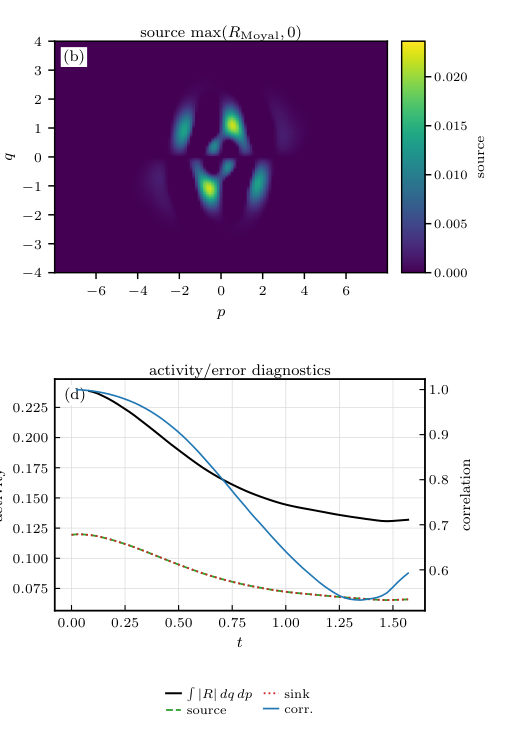
<figcaption class="paper-figure-caption"><b>Fig 4.</b> Figure 5 collects the corresponding moment, total- variation, sign-cancellation, and residual-activity diag- nostics. Panel (a) compares selected Weyl moments and checks that the plotted evolution is not being di- agnosed only through a final L2 norm. Panels (b) and (c) monitor total variation and sign cancellation, which are the quantities most sensitive to artificial damping, clipping, or hidden loss of signed weight. Panel (d) re- peats the residual-activity accounting used in Fig. 3; this is the same signed activity entering the residual diagnos- tic χQ(t), up to the choice of norm and normalization. Together with the small normalization and boundary er- rors quoted above, these...</figcaption>
</figure>
<figure class="paper-figure-card">
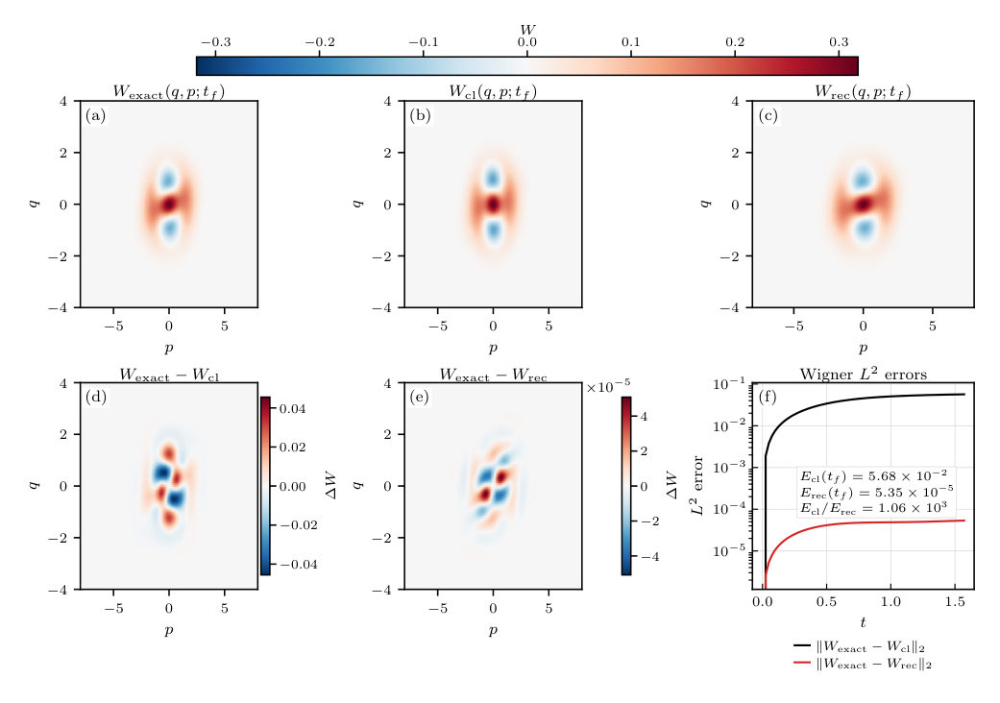
<figcaption class="paper-figure-caption"><b>Fig 5.</b> FIG. 4. Signed-residual reconstruction of the quartic Wigner evolution. Classical carrier transport alone gives a final Wigner error of order 10−2, while the classical-plus-signed-residual update reduces the error to order 10−5 for the balanced benchmark. No damping, clipping, smoothing, diffusion coefficient, or fitted Langevin noise is introduced.</figcaption>
</figure>
</div>

<p><strong>Summary.</strong> The paper addresses the failure of positive Langevin-type methods to capture exact quantum dynamics in anharmonic potentials. It introduces a method to reconstruct the Wigner function using classical trajectories with signed weights to account for quantum interference. This allows for an exact stochastic representation of the Wigner-Moyal equation.</p>
<p><strong>Why it may be interesting.</strong> It provides a rigorous framework for Monte Carlo-style simulations of quantum phase-space dynamics, offering a way to handle the sign problem by isolating non-classicality into a specific, manageable residual term.</p>
<details>
<summary>Detailed structure</summary>
<p><strong>Main problem.</strong> The impossibility of representing exact Wigner-Moyal dynamics using a positive, second-order Fokker-Planck/Langevin process for non-quadratic potentials.</p>
<p><strong>Main result.</strong> The authors propose a weighted phase-space path representation where classical Hamiltonian flow serves as a carrier, and quantum corrections are captured via signed weights or branching events, effectively reconstructing the Wigner function as a weighted empirical measure.</p>
<p><strong>Method.</strong> A stochastic representation using a weighted empirical measure, splitting the Wigner-Moyal generator into a classical Liouville part and a signed Moyal residual using the Hahn-Jordan decomposition.</p>
<p><strong>Model / system.</strong> Quantum phase-space dynamics governed by the Wigner-Moyal equation, specifically tested using harmonic (quadratic) and quartic (anharmonic) oscillators.</p>
<p><strong>Key observables.</strong> Weyl-ordered expectation values, Born density, Moyal residual, interference parity (A_sign), and magnitude factor (A_mag).</p>
<p><strong>Important parameters / regimes.</strong> Planck's constant (hbar), mass (m), and the anharmonicity parameter (lambda).</p>
<p><strong>Assumptions / limitations.</strong> The use of the Weyl transform/correspondence to define the target phase-space object.</p>
<p><strong>Figures summary.</strong> Figure 1 shows a null test with the harmonic oscillator where error is at the numerical floor; Figure 2 demonstrates the breakdown of classical transport in a quartic potential; Figure 5 compares Weyl moments between exact and classical-carrier evolution.</p>
<p><strong>Paper structure.</strong> The paper identifies the incompatibility of positivity and exact Wigner dynamics, proposes a weighted stochastic reconstruction method, develops a forward-reverse path identity, and validates the approach via numerical benchmarks with harmonic and quartic oscillators.</p>
</details>
<details>
<summary>Abstract</summary>
<p>A quantum state can be written in phase space, but the resulting object is not generally the probability density of a positive stochastic process on ordinary phase space. We spell this out for Wigner dynamics. If a positive phase-space process is required only to reproduce the Born density after integrating over momentum, the requirement fixes only an integrated current; the local drift and diffusion remain underdetermined. If one instead requires all Weyl-ordered expectation values, the phase-space object is fixed to be the Wigner function. For non-quadratic potentials the Wigner--Moyal generator contains higher-order, signed momentum-transfer terms, so it is not the Fokker--Planck generator of a positive Brownian diffusion. The exact Wigner function must therefore be reconstructed, in a stochastic representation, as a weighted empirical measure \[ \FW(\z,t)=\E_{\Pp}[W_tδ(\z-\z_t)], \qquad \z=(q,p), \] rather than the unweighted density of sampled carrier trajectories. With classical Hamiltonian flow as the carrier, all nonclassical correction beyond classical transport sits in the Moyal residual and can be represented by signed weights or branching events. The same split defines a residual diagnostic that vanishes for quadratic Hamiltonians and measures what classical carrier transport misses in anharmonic dynamics. The formulation also gives a forward--reverse relation for signed Wigner path measures. The ratio of forward and reversed contributions separates into a positive magnitude factor and a sign factor. This sign records the parity of the Wigner interference contribution; it is not a thermodynamic entropy production.</p>
</details>
<p><sub><a href="#top">↑ back to top</a></sub></p>

<p><a id="paper-2605.06171"></a></p>
<h3 id="quantum-phase-diagrams-for-bosons-in-hexagonal-optical-potentials-a-continuous-space-quantum-monte-carlo-study"><a href="http://arxiv.org/abs/2605.06171v1">Quantum phase diagrams for bosons in hexagonal optical potentials: A continuous-space quantum Monte Carlo study</a></h3>
<p><strong>Authors:</strong> Danilo Nascimento Guimaraes, Laurent Sanchez-Palencia<br>
<strong>Type:</strong> theory · <strong>Category:</strong> quantum gases · <strong>PDF:</strong> <a href="https://arxiv.org/pdf/2605.06171v1">https://arxiv.org/pdf/2605.06171v1</a><br>
<strong>Analysis basis:</strong> full PDF text, analyzed in chunks
<strong>Topic relevance:</strong> <code>analog quantum simulation</code> <strong>3/5</strong></p>
<div class="figure-strip-hint">↔ Scroll figures horizontally</div>
<div class="paper-figures-scroll">
<figure class="paper-figure-card">

<figcaption class="paper-figure-caption"><b>Fig 1.</b> Figure 1. Hexagonal lattice. (a) Lattice vectors Gj entering the potential of Eq. (2). Faint arrows indicate the laser wave vectors in the implementation of Ref. [36]. (b) Lattice formed by the minima of the potential in Eq. (2). It is composed of two interpenetrating triangular sublattices A (red) and B (green). Also shown are the Bravais vectors a1,2, the nearest- neighbor vectors δj, and the next-nearest-neighbor vectors δ′ j.</figcaption>
</figure>
<figure class="paper-figure-card">

<figcaption class="paper-figure-caption"><b>Fig 2.</b> Figure 2. Single-particle band structure for a honeycomb potential with various amplitudes and geometric phases. Results obtained using exact diagonalization of Hamiltonian ˆH0. (a) Full dispersion relations in the first Brillouin zone for the first bands, V0 = 15 Er, and ϕg = 0. (b1) Band dispersion relations along the high-symmetry path Γ–K1–M–K2 for V0 = 5 Er, and (b1) ϕg = 0, (b2) ϕg = 0.008, and (b3) ϕg = 0.1. (c) Same as (b) but for V0 = 15 Er.</figcaption>
</figure>
<figure class="paper-figure-card">

<figcaption class="paper-figure-caption"><b>Fig 3.</b> Figure 3. Tight-binding parameters as functions of the geometric phase ϕg for V0 = 15 Er. Results obtained by fitting the lowest-band dispersion relation of the continuous single-particle Hamiltonian ˆH0 to the nn (blue), nnn (red), and triangular (black) models. The vertical gray line marks ϕ∗ g ≃0.25, where the lowest B-site state crosses the first ex- cited A-site state. (a) Sublattice offset ∆AB obtained from the nn (blue) and nnn (red) model (note that they overlap each other), together with a linear fit (dashed black line). (b) Tun- neling amplitudes: J (solid), J′ A (dashed), and J′ B (dotted) for each model. (c) and (d) Normalized fitting errors for, respec- tively, the lower and...</figcaption>
</figure>
<figure class="paper-figure-card">

<figcaption class="paper-figure-caption"><b>Fig 4.</b> Figure 4. Quantum Monte Carlo simulation results for 2D bosons in a honeycomb optical lattice (V0 = 15 Er, ϕg = 0, ˜g0 = 0.67) for several temperatures and system sizes. (a) Density n, compressibility κ, and superfluid fraction fs versus chemical potential for several temperatures (the ticks on the colorbar indicate the used temperatures). (b) Superfluid phase-space density nsλ2 T versus temperature for various system sizes L×L (indicated on te colorbar), for µ ≃2.17 Er. The black horizontal line indicates the expacted BKT superfluid transition.</figcaption>
</figure>
<figure class="paper-figure-card">

<figcaption class="paper-figure-caption"><b>Fig 5.</b> Figure 5. Quantum phase diagram for bosons in the honey- comb lattice (ϕg = 0) versus chemical potential and interac- tion strength for (a) V0 = 15 Er and (b) V0 = 9.75 Er Results obtained using continuous-space QMC for kBT = 0.01 Er, Colored regions denote superfluid (light green), normal-fluid (dark green), and Mott insulator (purple-mauve) phases. The crosses indicate selected boundary points obtained numeri- cally with error bars corresponding to ˜g0–µ space discretiza- tion; only a subset is shown for visual clarity. Phase bound- aries (solid black lines) are obtained by interpolation and ex- trapolation consistent with these error bars. Colored lines show Mott lobes predicted by the...</figcaption>
</figure>
</div>

<p><strong>Summary.</strong> This paper uses continuous-space quantum Monte Carlo to study bosons in honeycomb and h-BN-like optical lattices. It demonstrates that the standard Bose-Hubbard model fails at higher fillings due to density-assisted tunneling and reveals complex phase diagrams driven by lattice asymmetry. These findings are crucial for the accurate modeling of ultracold atoms in hexagonal geometries.</p>
<p><strong>Why it may be interesting.</strong> It provides critical insights into how continuous-space effects like density-assisted tunneling break the standard tight-binding paradigm in hexagonal geometries, which is essential for designing accurate experiments with ultracold atoms in graphene-like lattices.</p>
<details>
<summary>Detailed structure</summary>
<p><strong>Main problem.</strong> Investigating the quantum phase diagrams of ultracold bosons in hexagonal and h-BN-like optical potentials and determining the validity limits of the standard Bose-Hubbard model.</p>
<p><strong>Main result.</strong> The study finds that density-assisted tunneling significantly suppresses higher-order Mott insulator lobes, and a rich phase diagram with various sublattice occupations emerges in asymmetric h-BN-like lattices.</p>
<p><strong>Method.</strong> Continuous-space exact diagonalization for single-particle band structures and worm-algorithm quantum path-integral Monte Carlo (PIMC) for many-body phase diagrams.</p>
<p><strong>Model / system.</strong> A 2D gas of identical spinless bosons with repulsive contact interactions in hexagonal (honeycomb) and asymmetric (h-BN) optical lattices, modeled via a continuous-space Hamiltonian and an extended Bose-Hubbard model.</p>
<p><strong>Key observables.</strong> Local particle density, sublattice occupations (nA, nB), compressibility, superfluid fraction, and superfluid phase-space density.</p>
<p><strong>Important parameters / regimes.</strong> Lattice depth (V0), geometric phase (phi_g), interaction strength (g), chemical potential (mu), and tunneling amplitudes (J, J', J_tilde).</p>
<p><strong>Assumptions / limitations.</strong> The interaction is modeled as a contact (s-wave) interaction, and the evaluation of density-assisted tunneling uses a mean-field approximation.</p>
<p><strong>Figures summary.</strong> Figure 1 shows lattice geometry and vectors; Figure 2 displays single-particle band dispersions; Figure 4 presents PIMC results for density and superfluidity; Figure 7 illustrates the evolution of the lattice potential with geometric phase; Figure 8 shows the relative correction from density-assisted tunneling.</p>
<p><strong>Paper structure.</strong> The paper introduces the hexagonal lattice geometry, presents single-particle band structure calculations via exact diagonalization, details the many-body PIMC simulations, analyzes the phase diagrams for symmetric and asymmetric cases, quantifies deviations from the Bose-Hubbard model, and concludes with the impact of density-assisted tunneling.</p>
</details>
<details>
<summary>Abstract</summary>
<p>Hexagonal optical lattices, emulating graphene and hexagonal boron nitride (h-BN) structures, provide a versatile platform for exploring strongly correlated quantum matter. Using continuous-space exact diagonalization and quantum Monte Carlo simulations, we investigate the phase diagrams of ultracold bosons in honeycomb and h-BN lattices. For the honeycomb lattice, we find significant deviations from the standard Bose-Hubbard model even for strong lattice amplitudes. We observe suppressed Mott insulator lobes and the absence of higher-order insulating phases, attributed to strong density-assisted tunneling effects. In the h-BN case, a rich phase diagram emerges, featuring multiple Mott lobes with various sublattice occupations, driven by the interplay of lattice asymmetry, interactions, and particle filling. Our results highlight the necessity of continuous-space treatments for capturing the full complexity of bosonic quantum phases in hexagonal geometries, paving the way for experimental realizations with ultracold atoms and further theoretical work.</p>
</details>
<p><sub><a href="#top">↑ back to top</a></sub></p>

<p><a id="paper-2605.05571"></a></p>
<h3 id="tunable-interlayer-charge-transfer-states-in-mosemath98mathwsmath99math-moire-superlattices"><a href="http://arxiv.org/abs/2605.05571v1">Tunable Interlayer Charge-transfer States in MoSe$_2$/WS$_2$ Moiré Superlattices</a></h3>
<p><strong>Authors:</strong> Zheyu Lu, Jiahui Nie, Tianle Wang, Rwik Dutta, Ruishi Qi, Jingxu Xie, Can Uzundal, Jianghan Xiao, Ziyu Wang, Yibo Feng, Kenji Watanabe, Takashi Taniguchi, James R. Chelikowsky, Archana Raja, Steven G. Louie, Mit H. Naik, Michael P. Zaletel, Feng Wang<br>
<strong>Type:</strong> both · <strong>Category:</strong> strongly correlated electrons · <strong>PDF:</strong> <a href="https://arxiv.org/pdf/2605.05571v1">https://arxiv.org/pdf/2605.05571v1</a><br>
<strong>Analysis basis:</strong> full PDF text, analyzed in chunks
<strong>Topic relevance:</strong> <code>analog quantum simulation</code> <strong>3/5</strong></p>
<div class="figure-strip-hint">↔ Scroll figures horizontally</div>
<div class="paper-figures-scroll">
<figure class="paper-figure-card">

<figcaption class="paper-figure-caption"><b>Fig 1.</b> Fig. 1 | Emergent moiré excitations in H-type MoSe2/WS2 moiré superlattices. (a) Schematic showing the device structure. (b) First-principles calculations of the electron charge density modulation in H-type MoSe2/WS2 moiré superlattices, taking into account structural reconstructions in the bilayer. Left: charge density of the lowest moiré conduction band state derived from the K valley of the MoSe2 layer (marked as c1 band) is localized at the BSe/S stacking; right: charge density of the lowest energy conduction band derived from the K valley of the WS2 layer (marked as c7 band). (c) Electronic band structure of the reconstructed H-type MoSe2/WS2 moiré superlattices calculated using DFT,...</figcaption>
</figure>
<figure class="paper-figure-card">

<figcaption class="paper-figure-caption"><b>Fig 2.</b> Fig. 2 | Field-tunable interlayer charge transfer in H-type MoSe2/WS2 moiré superlattices. (a) Peak intensity of the low-energy moiré trion (LET) state in the doping and vertical electric- field two-dimensional parameter space. (b) Two representative horizontal line cuts in (a) with negative (blue) and positive (orange) electric field. (c) Peak intensity of the emergent moiré exciton (EX) state in the doping and vertical electric-field two-dimensional parameter space. (d) Two representative horizontal line cuts in (c) with negative (blue) and positive (orange) electric field. (e) Schematic showing the physical nature of the EX state. (f) Schematic showing the charge-transfer process between...</figcaption>
</figure>
<figure class="paper-figure-card">

<figcaption class="paper-figure-caption"><b>Fig 3.</b> Fig. 3 | Field-tunable interlayer charge transfer in R-type MoSe2/WS2 moiré superlattices. (a) Calculated band structure of 0° aligned MoSe2/WS2 moiré superlattices. c1 and c2 bands are localized in the MoSe2 layer; c10 and c24 bands are the first two lowest energy conduction states localized in the WS2 layer, derived from the K valley. (b) Calculated electron charge density modulation of some of the band states marked in (a). Bottom: first moiré band localized in the MoSe2 layer (c1 band); Top: lowest energy moiré conduction band derived from the K valley that is localized in the WS2 layer (c10 band). (c) Doping-field RC spectra of the MoSe2 layer with the doping range covering n/n0 = 0 to...</figcaption>
</figure>
<figure class="paper-figure-card">

<figcaption class="paper-figure-caption"><b>Fig 4.</b> Fig. 4 | Charge-transfer ordering in H-type MoSe2/WS2 moiré superlattices. (a) Parameterization of field-dependent intensity of LET (blue) and EX (orange) states from n/n0 = 1 to 3, following the fitting function in the main text. From top left to bottom right: f is the intensity contrast, c is the intensity offset, 𝛼 is the measured field susceptibility, and Ec is the midpoint critical electric field. (b) Simulated doping evolution of 𝛼 from Monte-Carlo sampling at multiple temperatures. Temperature is normalized against nearest-neighbor M-W Coulomb interaction 𝑉5, and 𝛼 is normalized against non-interacting expectation 𝛼) (see main text). (c) Illustration of three observed low-temperature...</figcaption>
</figure>
</div>

<p><strong>Summary.</strong> This paper investigates how vertical electric fields can switch electron localization between different sites in MoSe2/WS2 moire superlattices. By tuning the field, the researchers demonstrate control over interlayer charge-transfer states and predict the emergence of various correlated charge-ordered states. This work provides a comprehensive framework for using optical probes to study strongly correlated physics in moire heterostructures.</p>
<p><strong>Why it may be interesting.</strong> The realization of a highly tunable Fermi-Hubbard model on a honeycomb lattice via electric field control of charge-transfer states provides a platform for studying many-body dynamics and emergent topological or ferroelectric phases.</p>
<details>
<summary>Detailed structure</summary>
<p><strong>Main problem.</strong> Understanding the nature of emergent optical transitions and the mechanism of electron localization and interlayer charge-transfer in electron-doped MoSe2/WS2 moire superlattices under vertical electric fields.</p>
<p><strong>Main result.</strong> The study demonstrates that vertical electric fields can precisely control interlayer electron localization, switching electrons between M and W sites to realize a tunable Fermi-Hubbard model with emergent charge-ordered states.</p>
<p><strong>Method.</strong> The work combines experimental optical reflection spectroscopy and Magnetic Circular Dichroism with large-scale first-principles DFT, GW-BSE calculations using the PUMP method, and Monte Carlo simulations.</p>
<p><strong>Model / system.</strong> Angle-aligned MoSe2/WS2 heterobilayers (moire superlattices) in H-type (60-degree) and R-type (0-degree) configurations, modeled as a Fermi-Hubbard model on an effective honeycomb lattice with tunable band alignment.</p>
<p><strong>Key observables.</strong> Reflection contrast (RC) spectra, Magnetic Circular Dichroism (MCD) signals, trion intensities (LET, HET, EXT), and electric-field susceptibility (alpha).</p>
<p><strong>Important parameters / regimes.</strong> Electron doping level (n/n0), vertical electric field (E), conduction band offset (delta), and onsite Coulomb repulsion (U).</p>
<p><strong>Assumptions / limitations.</strong> The interacting model treats the system as classical by neglecting coherent electron hopping due to the dominance of the Coulomb scale; layer dependence of Coulomb interactions is neglected.</p>
<p><strong>Figures summary.</strong> Fig 1 shows device structure, charge density modulation, and optical spectra (RC/MCD) for moire excitons and trions; Fig 2 maps the 2D parameter space of doping vs. electric field for charge-transfer processes; Fig 3 illustrates the R-type superlattice properties and doping-field maps.</p>
<p><strong>Paper structure.</strong> The paper introduces the moire system, details the experimental and computational methods, presents the identification of emergent moire excitations, demonstrates the electric-field-driven charge-transfer mechanism, and concludes with Monte Carlo predictions of correlated charge-ordered states.</p>
</details>
<details>
<summary>Abstract</summary>
<p>Moiré superlattices formed by transition metal dichalcogenide (TMD) heterobilayers provide a versatile platform for studying strongly correlated electronic, excitonic, and topological phenomena in solids. In particular, angle-aligned MoSe$_2$/WS$_2$ heterobilayers, which have a Type-I band alignment at zero vertical electric field, host rich correlated spin and charge physics. Here, combining large-scale first-principles calculations and optical reflection spectroscopy, we report a thorough study of the emergent moiré excitonic states and interlayer charge-transfer states in angle-aligned electron-doped MoSe$_2$/WS$_2$ moiré superlattices. The moiré excitonic states serve as sensitive optical probes to the localization profile of doped electrons. We observe a series of interlayer charge-transfer transitions from n/n$_0$ = 1 to 4 (where n$_0$ denotes the moiré density) when the vertical electric field switches the heterostructure band alignment from Type-I to Type-II. By tuning the vertical electric field, we can precisely control the interlayer electron localization, realizing a Fermi-Hubbard model with a tunable charge-transfer band on an effective honeycomb lattice. Furthermore, Monte Carlo simulation of the doping dependence of the electric-field susceptibility predicts that multiple correlated charge-ordered states appear at both integer and fractional fillings. Our results provide a holistic understanding of the emergent optical excitations and the correlated charge-transfer states in electron-doped MoSe$_2$/WS$_2$ moiré superlattices.</p>
</details>
<p><sub><a href="#top">↑ back to top</a></sub></p>

<p><a id="paper-2605.05658"></a></p>
<h3 id="quantum-classical-solvation-hydrodynamics-hamiltonian-functionals-and-dissipation"><a href="http://arxiv.org/abs/2605.05658v1">Quantum-classical solvation hydrodynamics: Hamiltonian functionals and dissipation</a></h3>
<p><strong>Authors:</strong> François Gay-Balmaz, Cesare Tronci<br>
<strong>Type:</strong> theory · <strong>Category:</strong> statistical mechanics · <strong>PDF:</strong> <a href="https://arxiv.org/pdf/2605.05658v1">https://arxiv.org/pdf/2605.05658v1</a><br>
<strong>Analysis basis:</strong> full PDF text, analyzed in chunks
<strong>Topic relevance:</strong> <code>Keldysh / 2PI / non-Gaussian methods</code> <strong>2/5</strong> · <code>correlated / nonlocal dissipation</code> <strong>2/5</strong> · <code>methods for driven-dissipative</code> <strong>2/5</strong> · <code>non-equilibrium dynamics</code> <strong>2/5</strong> · <code>quantum measurements</code> <strong>1/5</strong></p>
<div class="figure-strip-hint">↔ Scroll figures horizontally</div>
<div class="paper-figures-scroll">
<figure class="paper-figure-card">

<figcaption class="paper-figure-caption"><b>Fig 1.</b> Low-resolution page preview, page 2</figcaption>
</figure>
<figure class="paper-figure-card">

<figcaption class="paper-figure-caption"><b>Fig 2.</b> Low-resolution page preview, page 3</figcaption>
</figure>
<figure class="paper-figure-card">

<figcaption class="paper-figure-caption"><b>Fig 3.</b> Low-resolution page preview, page 4</figcaption>
</figure>
<figure class="paper-figure-card">

<figcaption class="paper-figure-caption"><b>Fig 4.</b> Low-resolution page preview, page 5</figcaption>
</figure>
<figure class="paper-figure-card">

<figcaption class="paper-figure-caption"><b>Fig 5.</b> Low-resolution page preview, page 6</figcaption>
</figure>
</div>

<p><strong>Summary.</strong> This paper presents a new hydrodynamic theory for modeling how a quantum molecule interacts with a classical liquid solvent. It overcomes the limitations of standard models by including essential physics like backreaction and solvent inertia, providing a mathematically consistent way to study ultrafast chemical dynamics.</p>
<p><strong>Why it may be interesting.</strong> It provides a rigorous mathematical framework for studying open quantum systems coupled to classical environments, specifically addressing how backreaction and dissipation affect quantum decoherence and non-adiabatic dynamics.</p>
<details>
<summary>Detailed structure</summary>
<p><strong>Main problem.</strong> Developing a consistent mixed quantum-classical hydrodynamic framework to model non-adiabatic solvation, specifically capturing short-time inertial effects, backreaction, and solvent-induced decoherence.</p>
<p><strong>Main result.</strong> The derivation of a set of coupled hydrodynamic equations that preserve the underlying Hamiltonian and Poisson structures, extending the model from simple Ehrenfest dynamics to a complex Koopman-based framework including dissipation and polarization.</p>
<p><strong>Method.</strong> The authors use a moment method from kinetic theory applied to the Koopman model, employing a Hamiltonian functional approach and Lie-Poisson brackets to ensure energy balance and the preservation of Casimir invariants.</p>
<p><strong>Model / system.</strong> A hybrid system consisting of a quantum solute (e.g., NO molecule) interacting with a classical polar solvent (e.g., supercritical Argon), modeled using a Koopman-based hydrodynamic framework with a Marcus local approximation.</p>
<p><strong>Key observables.</strong> Fluid density, momentum density, quantum density matrix, polarization, angular momentum, and entropy.</p>
<p><strong>Important parameters / regimes.</strong> hbar (quantum scale), mass, microinertia constant, electric dipole moment, viscosity, and polarization diffusion coefficient.</p>
<p><strong>Assumptions / limitations.</strong> The solvent is treated as an ideal polar fluid; the model assumes the validity of the Koopman wavefunction approach and uses a cold-fluid ansatz to simplify the hydrodynamic closure.</p>
<p><strong>Paper structure.</strong> The paper begins by establishing a Hamiltonian baseline for nonpolar solvation, progresses to a complex polar model with orientational backreaction, introduces the Koopman model to capture decoherence, and concludes by integrating dissipative terms for viscosity and polarization relaxation.</p>
</details>
<details>
<summary>Abstract</summary>
<p>We propose a mixed quantum-classical hydrodynamic framework to model short-time inertial effects in the non-adiabatic evolution of a quantum solute coupled to a classical polar solvent. Drawing upon the work of Burghardt and Bagchi [Chem. Phys. 329 (2006), 343], we employ the Hamiltonian approach to incorporate consistent backreaction and preserve quantum decoherence beyond standard Ehrenfest dynamics. The solvent is treated as an ideal polar fluid and the quantum solute state is correlated to both the position and molecular orientation coordinates of the liquid. This approach retains essential solute-solvent correlations while significantly reducing the computational complexity of previous approaches. We further incorporate dissipative terms to capture both inertial effects and polarization relaxation. After establishing the general setting for non-local dielectric continua, the Marcus local approximation is integrated into the model thereby extending traditional solvation theory to account for collective fluid sloshing on fast timescales.</p>
</details>
<p><sub><a href="#top">↑ back to top</a></sub></p>

<p><a id="paper-2605.06456"></a></p>
<h3 id="activation-in-vesicle-mediated-signaling-shaped-by-batch-arrival-statistics"><a href="http://arxiv.org/abs/2605.06456v1">Activation in Vesicle-Mediated Signaling Shaped by Batch Arrival Statistics</a></h3>
<p><strong>Authors:</strong> Jan Hauke, Julian B. Voits, Ulrich S. Schwarz<br>
<strong>Type:</strong> theory · <strong>Category:</strong> statistical mechanics · <strong>PDF:</strong> <a href="https://arxiv.org/pdf/2605.06456v1">https://arxiv.org/pdf/2605.06456v1</a><br>
<strong>Analysis basis:</strong> full PDF text, analyzed in chunks
<strong>Topic relevance:</strong> <code>correlated / nonlocal dissipation</code> <strong>2/5</strong> · <code>methods for driven-dissipative</code> <strong>2/5</strong> · <code>non-equilibrium dynamics</code> <strong>2/5</strong> · <code>quantum measurements</code> <strong>2/5</strong></p>
<div class="figure-strip-hint">↔ Scroll figures horizontally</div>
<div class="paper-figures-scroll">
<figure class="paper-figure-card">

<figcaption class="paper-figure-caption"><b>Fig 1.</b> Figure 1. Stochastic burst–degradation dynamics in cellular communication. A Synaptic signaling: Neurotransmitter molecules are released in discrete batches from synaptic vesicles into the synaptic cleft following neuronal stimulation. Molecules diffuse, bind to postsynaptic receptors, and are cleared by uptake or enzymatic degradation. B Endocrine signaling: Hormone-containing vesicles in an endocrine cell release bursts of molecules into the bloodstream. The hormones are transported, degraded, or diluted, and activate distant target cells once the local concentration exceeds an effective threshold. C The molecule count in these systems becomes a stochastic variable (blue line) that is...</figcaption>
</figure>
<figure class="paper-figure-card">

<figcaption class="paper-figure-caption"><b>Fig 2.</b> Figure 2. Simulated distribution of the number of molecules pn(t) for λ(t) = 1 and qn = P∞ v=0 δn,1000vBinom(v|N = 50, p = 0.2), which means that each vesicle can bring up to 50 new molecules with a release probability of 20 percent. One sees that the system first grows in bursts due to the initial condition of no molecules, and then relaxes again.</figcaption>
</figure>
<figure class="paper-figure-card">

<figcaption class="paper-figure-caption"><b>Fig 3.</b> Figure 3. Release size distribution qm for quantal count distribution q(V ) = Binom(V, ρ=0.8) and quantal size distribution q(C) = N(⟨c⟩, σc = 0.1⟨c⟩). The dashed line represents a normal distribution with mean ⟨m⟩= ⟨c⟩⟨v⟩ and variance σ2 m as in Eq. (23).</figcaption>
</figure>
<figure class="paper-figure-card">

<figcaption class="paper-figure-caption"><b>Fig 4.</b> Figure 4. Steady state, hitting probabilities and passage times for the fixed-interval train (blue) and the Poisson train (orange). The count of released vesicles is assumed to follow a binomial distribution with V = 50 release sites and release probability ρ = 0.2. The quantal size distribution is normal with mean ⟨c⟩= 1000 molecules per vesicle and σc = 0.2⟨c⟩. The quartiles of the shown distributions were obtained from stochastic sampling (see Supplement III). A Example trajectories for a fixed train (F) and a Poisson train (P). B Post-release distribution π+ n and steady state distribution πn. The steady-state distribution of the fixed train depends on the time T since the last release...</figcaption>
</figure>
<figure class="paper-figure-card">

<figcaption class="paper-figure-caption"><b>Fig 5.</b> Figure 5. Process where the release rate decays exponentially with rate γ and the total number of release events follows a Poisson distribution with mean N. The release size distribution is the same as in Fig. 4. A Example trajectories. B Distribution of maximum threshold reached, compared to the ”deterministic” maximum of the mean molecule count in gray. C First-passage time to threshold, provided that the threshold is reached, compared to the transient of the mean molecule count in gray.</figcaption>
</figure>
</div>

<p><strong>Summary.</strong> This paper provides an exact mathematical framework to describe how the timing of cellular activation is shaped by the randomness of molecular release. It demonstrates that the variability in the timing and size of release events can lead to qualitatively different activation behaviors even when mean rates are identical. The work also accounts for the effects of vesicle depletion and replenishment on signaling dynamics.</p>
<p><strong>Why it may be interesting.</strong> The mathematical framework of non-equilibrium, time-asymmetric stochastic processes and the derivation of exact solutions for threshold-crossing in bursty systems are highly relevant to open quantum systems and quantum optics.</p>
<details>
<summary>Detailed structure</summary>
<p><strong>Main problem.</strong> Understanding how the stochastic nature of vesicle-mediated signaling, specifically the temporal statistics of arrival events and burst-size variability, shapes the timing of downstream cellular activation.</p>
<p><strong>Main result.</strong> The authors derive an exact solution for the time-dependent probability distribution of a batch arrival-degradation model, showing that activation kinetics depend on time-asymmetric fluctuations rather than just mean dynamics.</p>
<p><strong>Method.</strong> The study employs a master equation approach solved via generating functions, recursion relations, and Bell polynomials, alongside a stochastic sampling algorithm for trajectories.</p>
<p><strong>Model / system.</strong> A general batch arrival-degradation process modeling vesicle-mediated secretion (e.g., neurotransmission) where molecules are released in discrete bursts and subsequently degraded at a rate proportional to the current count.</p>
<p><strong>Key observables.</strong> Time-dependent occupation probabilities, first-passage times (FPT) to a concentration threshold, mean and variance of molecule counts, and recurrence times.</p>
<p><strong>Important parameters / regimes.</strong> Arrival rate (kappa), degradation rate (gamma), burst-size distribution (q_m), inter-arrival time statistics (Poisson vs. fixed-interval), and vesicle replenishment rate (xi).</p>
<p><strong>Assumptions / limitations.</strong> The primary model assumes a Poisson process for arrivals and linear degradation; the extended model assumes a finite number of docking sites with a specific replenishment rate.</p>
<p><strong>Figures summary.</strong> Figure 1 illustrates the biological context and the stochastic nature of molecule counts; Figure 2 shows simulated probability distributions; Figure 4 compares fixed and Poisson arrival trains; Figure 7 shows the impact of replenishment on steady-state distributions.</p>
<p><strong>Paper structure.</strong> The paper introduces the biological problem, derives the exact solution for the master equation using generating functions, extends the model to include vesicle depletion, compares different arrival statistics (Poisson vs. fixed-interval), and concludes with a discussion on biological implications.</p>
</details>
<details>
<summary>Abstract</summary>
<p>Vesicle-mediated secretion of ions or molecules is a central mechanism of cellular communication, for example in processes such as neurotransmission or hormone release. These events are inherently stochastic: vesicle fusions lead to bursts of variable sizes, releasing discrete packets of transmitters that are subsequently cleared or degraded. The dynamics break time-reversal symmetry due to the interplay of spontaneous bursts and continuous degradation. Using generating functions and a recursion relation, we derive an exact solution for the full time-dependent probability distribution of a general batch arrival-degradation model. This framework also enables a full analysis of first-passage times to a concentration threshold representing downstream activation. We show that activation kinetics are not determined by mean dynamics alone, but depend sensitively on the temporal statistics of arrival events, batch-size variability, and degradation. In particular, different arrival processes with identical mean rates can lead to qualitatively distinct first-passage behavior, reflecting the role of time-asymmetric fluctuations. We also discuss extensions incorporating vesicle depletion. Our results provide a transparent link between stochastic release dynamics and activation timing in vesicle-mediated signaling.</p>
</details>
<p><sub><a href="#top">↑ back to top</a></sub></p>

<p><a id="paper-2605.05934"></a></p>
<h3 id="emergent-conserved-quantities-via-irreversibility"><a href="http://arxiv.org/abs/2605.05934v1">Emergent conserved quantities via irreversibility</a></h3>
<p><strong>Authors:</strong> Alex Blokhuis, Martijn van Kuppeveld, Daan van de Weem, Robert Pollice<br>
<strong>Type:</strong> theory · <strong>Category:</strong> statistical mechanics · <strong>PDF:</strong> <a href="https://arxiv.org/pdf/2605.05934v1">https://arxiv.org/pdf/2605.05934v1</a><br>
<strong>Analysis basis:</strong> full PDF text, analyzed in chunks
<strong>Topic relevance:</strong> <code>correlated / nonlocal dissipation</code> <strong>2/5</strong> · <code>non-equilibrium dynamics</code> <strong>2/5</strong> · <code>scars &amp; prethermalization</code> <strong>2/5</strong></p>
<div class="figure-strip-hint">↔ Scroll figures horizontally</div>
<div class="paper-figures-scroll">
<figure class="paper-figure-card">

<figcaption class="paper-figure-caption"><b>Fig 1.</b> FIG. 1: An Atmospheric CRN model[37, 38] with a recent machine-discovered candidate conserved quantity (CQ3 in Ref.[29]). The co-production index Υ = 1 is given next to its two collinear reactions (also highlighted in pink). These do not form a cycle. The cycle index c = 1 is given next to its three cycle reactions (highlighted in blue). Thus, no cycles break upon merging collinear reactions: ∆c = 0, ∆ℓ= +1, i.e., a co-production conservation law then results from the co-production law Υ = ∆ℓ−∆c, confirming the numerically found CQ3 marks the detection of a genuine conservation law.</figcaption>
</figure>
<figure class="paper-figure-card">

<figcaption class="paper-figure-caption"><b>Fig 2.</b> FIG. 3: Illustration of the general merging procedure. a) Representation with each reaction represented once (S). Reactions with pairwise proportional partners are highlighted in fuchsia. b) Representation after merging pairwise proportional reactions (S▷▷). Υ = 4 reactions were merged with respect to S. This results in one em- anant and three broken cycles.</figcaption>
</figure>
<figure class="paper-figure-card">

<figcaption class="paper-figure-caption"><b>Fig 3.</b> FIG. 4: Figure 1 from the main text, reproduced for convenience. An Atmospheric CRN model with co- production index Υ = 1. Collinear reactions are high- lighted in pink. These do not include cycle reactions - highlighted in blue - and, hence, no cycles break upon merging collinear reactions ∧= 0.</figcaption>
</figure>
<figure class="paper-figure-card">

<figcaption class="paper-figure-caption"><b>Fig 4.</b> FIG. 5: a) Evaluation of conserved quantities over av- erages after 1 reaction, by averaging over an increasing number of simulations. As the number of simulations increases, convergence occurs to the theoretical values (dotted line) of L(1), L(2), L(3). b) Averaged number of gaps [0], [1], [2] as a function of the number of individual simulated realizations, for trimer (n = 3) adsorption on a lattice of size L = 9. Dotted lines correspond to theoretical expectation values L(1), L(2), L(3), to which the simulated averages converge. Note that the conserved quantities here behave as regular conservation laws on the level of deterministic ODEs. Co-production conservation laws do not constrain...</figcaption>
</figure>
</div>

<p><strong>Summary.</strong> The paper identifies a mechanism where irreversible reactions create emergent conservation laws that standard structural analysis misses. By introducing the co-production index, the authors provide a theoretical basis for previously unexplained 'anomalous' quantities in chemical and stochastic models.</p>
<p><strong>Why it may be interesting.</strong> This work provides a new way to identify hidden symmetries and invariants in non-equilibrium systems, which is directly applicable to understanding dissipation and emergent constraints in open quantum systems and many-body dynamics.</p>
<details>
<summary>Detailed structure</summary>
<p><strong>Main problem.</strong> The difficulty in predicting the total number of observable conserved quantities in complex chemical reaction networks (CRNs) and Markov chains, specifically addressing why standard structural laws undercount them.</p>
<p><strong>Main result.</strong> The discovery of a 'co-production law' where irreversible reactions and collinear currents lead to emergent, hidden conservation laws and broken cycles, resolving previously unexplained non-integer conservation laws found via machine learning.</p>
<p><strong>Method.</strong> A mathematical framework involving a 'reaction merging' procedure for proportional currents, the definition of a 'co-production index', and the use of fundamental subspaces of the stoichiometric matrix.</p>
<p><strong>Model / system.</strong> The theory is applied to Chemical Reaction Networks (CRNs), Markov chains, and specifically to $n$-mer Random Sequential Adsorption (RSA) on a discrete lattice and atmospheric chemistry models.</p>
<p><strong>Key observables.</strong> Conserved quantities (left nullvectors of the stoichiometric matrix), reaction currents, co-production index, and gap populations in RSA.</p>
<p><strong>Important parameters / regimes.</strong> Co-production index (Upsilon), number of broken cycles (Lambda), and reaction rate constants.</p>
<p><strong>Assumptions / limitations.</strong> The derivation assumes mass-action kinetics for CRNs and first-order transitions for the stochastic-to-deterministic link; it also assumes polynomial flow for numerical verification.</p>
<p><strong>Figures summary.</strong> Figure 1 shows an atmospheric CRN with collinear and cycle reactions; Figure 2 illustrates trimer adsorption steps and lattice configurations; Figure 3 depicts the reaction merging procedure; Figure 4 reconstructs the atmospheric model; Figure 5 shows the convergence of ensemble averages.</p>
<p><strong>Paper structure.</strong> The paper introduces the problem of undercounted conservation laws, proposes the reaction merging technique and the co-production law, validates the theory using atmospheric chemistry and RSA models, and extends the framework to stochastic master equations and non-mass-action kinetics.</p>
</details>
<details>
<summary>Abstract</summary>
<p>Conserved quantities increasingly underpin the inference of physical models. Recently new conserved quantities have been found in this context, that currently lack an interpretation. Here, we show that irreversible reactions in CRNs and Markov Chains lead to emergent conservation laws and broken cycles. Linearly dependent currents - characterized by the "co-production index" - arise due to irreversible reactions. We derive a law relating conserved quantities, broken cycles, and co-production. This resolves a recent conundrum posed by a machine-discovered candidate for a non-integer conservation law. Our findings introduce heretofore overlooked extensions to a widely used index law for CRNs and Markov Chains that undercounts conservation laws. This furnishes new tools and immediate applications for the inference and analysis of models based on conservation laws.</p>
</details>
<p><sub><a href="#top">↑ back to top</a></sub></p>

<p><a id="paper-2605.06008"></a></p>
<h3 id="dzyaloshinskii-moriya-interaction-as-a-coherence-diagnostic-for-chirality-induced-spin-selectivity"><a href="http://arxiv.org/abs/2605.06008v1">Dzyaloshinskii-Moriya interaction as a coherence diagnostic for chirality-induced spin selectivity</a></h3>
<p><strong>Authors:</strong> Vishvendra S. Poonia<br>
<strong>Type:</strong> theory · <strong>Category:</strong> quantum information and computing · <strong>PDF:</strong> <a href="https://arxiv.org/pdf/2605.06008v1">https://arxiv.org/pdf/2605.06008v1</a><br>
<strong>Analysis basis:</strong> full PDF text, analyzed in chunks
<strong>Topic relevance:</strong> <code>methods for driven-dissipative</code> <strong>2/5</strong> · <code>spintronics-quantum-optics interface</code> <strong>2/5</strong> · <code>non-equilibrium dynamics</code> <strong>1/5</strong></p>
<div class="figure-strip-hint">↔ Scroll figures horizontally</div>
<div class="paper-figures-scroll">
<figure class="paper-figure-card">

<figcaption class="paper-figure-caption"><b>Fig 1.</b> FIG. 1. Two spin qubits QD1 and QD2 coupled through a chiral molecular bridge. The helix axis ˆn subtends angle ϕhelix with the magnetic field B. Coherent CISS (Model 1) enacts a unitary SU(2) rotation on the tunneling electron. Incoherent CISS (Model 2) acts as a non-unitary diagonal spin filter. The two scenarios give opposite predictions for the superexchange tensor Eq. (4).</figcaption>
</figure>
<figure class="paper-figure-card">

<figcaption class="paper-figure-caption"><b>Fig 2.</b> FIG. 3. Three falsifiable experimental signatures. (a) An- gular fingerprint: singlet-triplet gap ∆EST versus helix-field angle ϕhelix for four values of θC under Model 1; gray dotted line: Model 2 (any η) and interface Rashba SOC, both angle- independent. All Model 1 curves emanate from the gauge- trivial value J0 = 5 µeV at ϕhelix = 0 and deviate as sin2 ϕhelix. (b) Enantiomer null test: Model 1 predicts Dx(R) = −Dx(S) with JH invariant; Model 2 shows no enantiomer dependence. (c) Sensitivity threshold: |∆ECISS ST | versus θC for ˆn ⊥B, with 10 kHz, 100 kHz and 1 MHz precision thresholds marked. Detection at θC ∼0.03π (i.e., P ∼0.2%) is within reach of current Si/SiGe exchange...</figcaption>
</figure>
<figure class="paper-figure-card">

<figcaption class="paper-figure-caption"><b>Fig 3.</b> FIG. 2. The two CISS models give qualitatively different su- perexchange tensors. (a) Model 1: irreducible components JH, |D|, |←→ Γ | versus θC (ˆn ⊥B); analytic Eqs. (5)–(7) (black dashed) agree with numerical evaluation of Eq. (4) to machine precision. (b) Model 2 components versus filtering asymmetry η: |D| = 0 identically. (c) Full 3 × 3 exchange tensor at matched transport polarization P = 25%: Model 1 has off-diagonal antisymmetric entries (the DM contribution), Model 2 is strictly diagonal. (d) Anisotropy ratio |D|/JH ver- sus P: the two models are separated by 2–3 decades, with the experimental Ge FinFET value [33] indicated for reference. Parameters: t0 = 50 µeV, U = 2 meV, J0 =...</figcaption>
</figure>
<figure class="paper-figure-card">

<figcaption class="paper-figure-caption"><b>Fig 4.</b> FIG. 4. Experimental feasibility. (a) √</figcaption>
</figure>
</div>

<p><strong>Summary.</strong> This paper proposes using the Dzyaloshinskii-Moriya interaction as a diagnostic tool to determine if chiral molecules induce spin selectivity through coherent rotation or incoherent filtering. It demonstrates that a non-zero DM interaction would uniquely certify a coherent quantum process. The study shows that this measurement is achievable with current quantum dot technologies using several candidate molecules.</p>
<p><strong>Why it may be interesting.</strong> It provides a fundamental 'no-go' theorem for spin-dependent transport and proposes a way to use spin-qubit exchange spectroscopy to probe the quantum coherence of molecular interfaces.</p>
<details>
<summary>Detailed structure</summary>
<p><strong>Main problem.</strong> Resolving the long-standing controversy of whether Chirality-Induced Spin Selectivity (CISS) is a coherent SU(2) spin rotation or an incoherent spin-dependent filtering process.</p>
<p><strong>Main result.</strong> The paper proves that the Dzyaloshinskii-Moriya (DM) interaction serves as a definitive coherence order parameter, being non-zero only in the coherent rotation scenario and identically zero in the incoherent filtering scenario.</p>
<p><strong>Method.</strong> The author uses Schrieffer-Wolff projection to derive an effective spin Hamiltonian and employs Lindblad analysis to show that dephasing does not generate DM interaction.</p>
<p><strong>Model / system.</strong> The system consists of two electrons in adjacent gate-defined quantum dots coupled via virtual tunneling through a chiral molecular bridge, modeled either as a unitary spin rotator or a non-unitary spin-diagonal barrier.</p>
<p><strong>Key observables.</strong> Dzyaloshinskii-Moriya interaction (D), singlet-triplet gap (delta E_ST), exchange anisotropy ratio (|D|/JH), and spin polarization (P).</p>
<p><strong>Important parameters / regimes.</strong> Rotation angle (theta_C), helix axis (n), exchange energy (J0), and the 10 kHz exchange spectroscopy threshold.</p>
<p><strong>Assumptions / limitations.</strong> The virtual tunneling time is much shorter than the molecular dephasing time; the tunneling matrix in the incoherent model is assumed to be Hermitian.</p>
<p><strong>Figures summary.</strong> Figure 3 illustrates the three experimental signatures: the angular dependence of the gap, the enantiomer sign-reversal test, and the sensitivity threshold for detecting rotation.</p>
<p><strong>Paper structure.</strong> The paper introduces the CISS controversy, defines two competing physical models, derives a symmetry theorem for the DM interaction, proposes an experimental protocol using quantum dots, and evaluates the feasibility for specific candidate molecules.</p>
</details>
<details>
<summary>Abstract</summary>
<p>Whether chirality-induced spin selectivity (CISS) reflects coherent SU(2) spin rotation or incoherent spin-dependent filtering is a central unresolved question in molecular spintronics, with implications ranging from asymmetric chemistry to quantum information. We show that these two scenarios are distinguishable by a sharp symmetry criterion on the superexchange interaction mediated by a chiral molecular bridge. Coherent CISS, implemented as a unitary spin rotation of the tunneling electron, generates a giant Dzyaloshinskii-Moriya (DM) interaction with ratio |D|/JH up to 3, which is two orders of magnitude beyond intrinsic Rashba spin-orbit coupling in Si/SiGe. Incoherent CISS, represented by any Hermitian (non-unitary but spin-diagonal) tunneling matrix, produces D = 0 identically; we prove this as a structural theorem, reinforced by a Lindblad argument that dissipative spin filtering cannot modify virtual-tunneling-mediated superexchange. The DM interaction thus serves as a coherence order parameter, nonzero only when quantum amplitudes for opposite-spin transmission maintain a fixed relative phase. We derive closed-form angular, enantiomeric, and sensitivity signatures and show that the critical coherent rotation angle lies two orders of magnitude below current transport-inferred values and is accessible to existing 10 kHz exchange spectroscopy in gate-defined quantum dots. Five candidate molecules are predicted to exceed this threshold by one to two orders of magnitude even in a conservative interface-amplification scenario. The proposed measurement converts a long-standing transport controversy into a binary spin-qubit experiment with quantum-amplitude resolution.</p>
</details>
<p><sub><a href="#top">↑ back to top</a></sub></p>

<p><a id="paper-2605.06424"></a></p>
<h3 id="finite-time-optimal-control-by-noisy-traps"><a href="http://arxiv.org/abs/2605.06424v1">Finite-Time Optimal Control by Noisy Traps</a></h3>
<p><strong>Authors:</strong> Luca Cocconi, Henry Alston, Thibault Bertrand<br>
<strong>Type:</strong> theory · <strong>Category:</strong> statistical mechanics · <strong>PDF:</strong> <a href="https://arxiv.org/pdf/2605.06424v1">https://arxiv.org/pdf/2605.06424v1</a><br>
<strong>Analysis basis:</strong> full PDF text, analyzed in chunks
<strong>Topic relevance:</strong> <code>driven-dissipative phase transition</code> <strong>2/5</strong> · <code>non-equilibrium dynamics</code> <strong>2/5</strong> · <code>non-equilibrium universality</code> <strong>1/5</strong></p>
<div class="figure-strip-hint">↔ Scroll figures horizontally</div>
<div class="paper-figures-scroll">
<figure class="paper-figure-card">

<figcaption class="paper-figure-caption"><b>Fig 1.</b> Fig. 1: Schematic representation of a passive probe controlled by a noisy harmonic trap, here visualised as an intermittent optical tweezer. In the transport scenario, a deterministic pro- tocol translates the trap centre along the coordinate x, while the trap stiffness k(t) fluctuates stochastically and continuously exchanges work with the probe.</figcaption>
</figure>
<figure class="paper-figure-card">

<figcaption class="paper-figure-caption"><b>Fig 2.</b> Fig. 2: Optimal transport with a noisy trap under steady drag- ging. (a) Work per unit distance in an intermittent trap ob- tained from Eq. (12). Here, D = 1, κ = 1 and r = 1. (b) Op- timal protocol duration for unconstrained [Eq. (22)] and con- strained [Eq. (27)] optimal transport, showing the transition to zero-time optimality. Here, D = 1, ¯k = 1 and λT = 1.</figcaption>
</figure>
<figure class="paper-figure-card">

<figcaption class="paper-figure-caption"><b>Fig 3.</b> Fig. 3: Optimal stiffening with a noisy trap. (a) Mean work as a function of the optimisation parameters (c, T), showing convergence in the large-c regime. (b) Optimal protocol du- ration for unconstrained [Eq. (43)] and constrained [Eq. (47)] optimal stiffening, showing the transition to zero-time opti- mality at σk,c = (λT −λ0)/2. Here, D = 1, λ0 = 1, λT = 3 and ϵ = 10−10.</figcaption>
</figure>
</div>

<p><strong>Summary.</strong> This paper demonstrates that when a controller is dissipative and violates detailed balance, the traditional preference for infinitely slow (quasistatic) protocols breaks down. It identifies a phase transition where the optimal control duration vanishes above a certain noise threshold. This provides new insights into how non-equilibrium fluctuations in control parameters can fundamentally alter the landscape of optimal transport.</p>
<p><strong>Why it may be interesting.</strong> not directly relevant</p>
<details>
<summary>Detailed structure</summary>
<p><strong>Main problem.</strong> Investigating whether finite-time optimal control is required in passive systems when the controller itself is dissipative and violates detailed balance.</p>
<p><strong>Main result.</strong> The study reveals a breakdown of quasistatic optimality where the optimal protocol duration collapses to zero above a critical fluctuation strength in unconstrained transport, though endpoint constraints prevent this collapse.</p>
<p><strong>Method.</strong> The authors use a variational approach with Euler-Lagrange equations, a Fokker-Planck derivation for joint probability density, and small-T expansions to identify phase transitions.</p>
<p><strong>Model / system.</strong> A passive Brownian particle in a harmonic trap where the trap stiffness fluctuates stochastically according to a continuous-time Markov chain, representing a dissipative controller.</p>
<p><strong>Key observables.</strong> Mean work (cost functional), optimal protocol duration (T*), and dissipated work per unit distance.</p>
<p><strong>Important parameters / regimes.</strong> Stiffness fluctuation variance (sigma_k^2), critical variance threshold (sigma_k,c^2), transport velocity (v), and the fast-switching regime.</p>
<p><strong>Assumptions / limitations.</strong> The stiffness dynamics are modeled as a Markov chain; the system is in the overdamped Langevin regime; and the fast-switching approximation is used to analyze the stiffness dynamics.</p>
<p><strong>Figures summary.</strong> Fig 1 shows a schematic of a particle in a noisy harmonic trap; Fig 2 illustrates the transition of optimal duration toward zero at a critical noise level and work vs. velocity plots.</p>
<p><strong>Paper structure.</strong> The paper introduces the problem of dissipative control, defines the stochastic model and Langevin dynamics, applies a variational method and multiscale expansion, analyzes the zero-time transition under different constraints, and concludes with implications for steady dragging.</p>
</details>
<details>
<summary>Abstract</summary>
<p>The optimal control of passive systems in equilibrium typically favours quasistatic (infinite-time) protocols. We show that a breakdown of quasistatic optimality occurs when the controller itself is dissipative. Concretely, we study a Brownian particle confined by a harmonic trap with stochastically fluctuating stiffness, driven by an external protocol. When these fluctuations violate detailed balance, the probe-controller coupling continuously exchanges work with the system, altering the optimisation landscape. In this regime, optimal protocols are characterised by a finite duration which vanishes above a critical fluctuation strength. This transition can be directly observed in a short-time expansion of the mean work functional. When imposing an endpoint constraint, the transition to zero duration disappears and finite duration protocols remain optimal for all values of the controller fluctuations. These results demonstrate that finite-time optimality can emerge in passive systems under nonequilibrium control.</p>
</details>
<p><sub><a href="#top">↑ back to top</a></sub></p>

<p><a id="paper-2605.06543"></a></p>
<h3 id="a-rayleigh-criterion-for-mechanical-instability-inducing-activity-by-chemo-mechanical-coupling"><a href="http://arxiv.org/abs/2605.06543v1">A Rayleigh criterion for mechanical instability: inducing activity by chemo-mechanical coupling</a></h3>
<p><strong>Authors:</strong> Aaron Beyen, Francesco Casini, Christian Maes<br>
<strong>Type:</strong> theory · <strong>Category:</strong> statistical mechanics · <strong>PDF:</strong> <a href="https://arxiv.org/pdf/2605.06543v1">https://arxiv.org/pdf/2605.06543v1</a><br>
<strong>Analysis basis:</strong> full PDF text, analyzed in chunks
<strong>Topic relevance:</strong> <code>driven-dissipative phase transition</code> <strong>2/5</strong> · <code>non-equilibrium dynamics</code> <strong>2/5</strong></p>
<div class="figure-strip-hint">↔ Scroll figures horizontally</div>
<div class="paper-figures-scroll">
<figure class="paper-figure-card">

<figcaption class="paper-figure-caption"><b>Fig 1.</b> FIG. 1: Probe (black dot) following the dynamics (1) for a 3 state model in a switching potential</figcaption>
</figure>
<figure class="paper-figure-card">

<figcaption class="paper-figure-caption"><b>Fig 2.</b> FIG. 2: Plot of the friction coefficient ν(x)/νc with νc = βU2 0 /(ψ0L2) versus x/L. Parameter</figcaption>
</figure>
<figure class="paper-figure-card">

<figcaption class="paper-figure-caption"><b>Fig 3.</b> Fig. 2a shows the influence of the dimensionless driving parameter βw on the friction coefficient.</figcaption>
</figure>
<figure class="paper-figure-card">

<figcaption class="paper-figure-caption"><b>Fig 4.</b> FIG. 3: Velocity statistics in time (a) average velocity (b) standard deviation with characteristic</figcaption>
</figure>
<figure class="paper-figure-card">

<figcaption class="paper-figure-caption"><b>Fig 5.</b> FIG. 4: Steady state distributions for the (a) velocity normalized with vc = p</figcaption>
</figure>
</div>

<p><strong>Summary.</strong> This paper provides a theoretical framework to understand how chemical energy can be converted into mechanical motion through feedback. It identifies a specific phase-relation criterion, analogous to Rayleigh's criterion for acoustic instability, that predicts when chemical driving leads to negative friction and sustained active motion.</p>
<p><strong>Why it may be interesting.</strong> not directly relevant</p>
<details>
<summary>Detailed structure</summary>
<p><strong>Main problem.</strong> Determining the conditions under which non-equilibrium chemical driving generates mechanical instability, such as negative friction and sustained rotational motion, through chemo-mechanical coupling.</p>
<p><strong>Main result.</strong> The authors derive a Rayleigh-like criterion for the onset of activity based on the phase relation between entropic and frenetic contributions, showing that negative friction can emerge when the frenetic (time-symmetric) component dominates.</p>
<p><strong>Method.</strong> The study uses a reduction/integration approach (Born-Oppenheimer-like) to integrate out fast chemical degrees of freedom, applying non-equilibrium linear response theory and singular perturbation theory in the weak coupling limit.</p>
<p><strong>Model / system.</strong> A Newtonian mechanical probe (underdamped particle) coupled to a chemical bath of $N$ independent Markov jump processes. The coupling is mediated by a potential $U(x, \sigma)$ that influences both the mechanical force and the chemical transition rates.</p>
<p><strong>Key observables.</strong> Effective friction coefficient (specifically the frenetic and entropic parts), induced mean force (rotational/streaming term), noise amplitude, and stationary velocity/position distributions.</p>
<p><strong>Important parameters / regimes.</strong> Chemical driving strength (affinity $\Delta\mu$ or $w$), coupling constant $\lambda$, phase angle $\phi$ between potential and reactivity, and the large driving limit $w 	o \infty$.</p>
<p><strong>Assumptions / limitations.</strong> Time-scale separation between fast chemical and slow mechanical dynamics, weak coupling limit ($\lambda \ll 1$), and the assumption of semi-reciprocity and local detailed balance.</p>
<p><strong>Figures summary.</strong> Plots of the friction coefficient as a function of position and driving strength; velocity distributions showing transitions from Maxwellian to bimodal/asymmetric; and position distributions showing U-shaped profiles in the active regime.</p>
<p><strong>Paper structure.</strong> The paper introduces the problem of chemo-mechanical instability, defines the mathematical framework of the coupled system, derives the reduced Langevin dynamics for the probe, analyzes the onset of negative friction and rotational forces using a Rayleigh-like criterion, explores the large driving limit, and concludes with numerical simulations of the nonlinear/saturation regimes.</p>
</details>
<details>
<summary>Abstract</summary>
<p>Instabilities in thermodynamic systems are often undesirable, as they can lead to loss of control or even catastrophic behavior. Yet, the same mechanisms can also generate rich nonequilibrium behavior and may play a constructive role in living systems. We introduce a theoretical framework, inspired by Rayleigh's analysis of thermoacoustic instabilities, to study the emergence of mechanical activity. In particular, we derive Rayleigh-like criteria governing the onset of activity and the generation of rotational motion in a slow Newtonian probe coupled to driven chemical processes, described by Markov jump processes. These criteria are expressed in terms of the phase relation between entropic and frenetic contributions, providing a transparent condition for when chemical driving results in sustained rotational or active mechanical motion.</p>
</details>
<p><sub><a href="#top">↑ back to top</a></sub></p>
<hr>
<p>
<a href="index.html">← Index</a>
 · <a href="papers_02.html">← Previous</a> · <a href="papers_04.html">Next →</a>
</p>
<hr>

</body>
</html>
